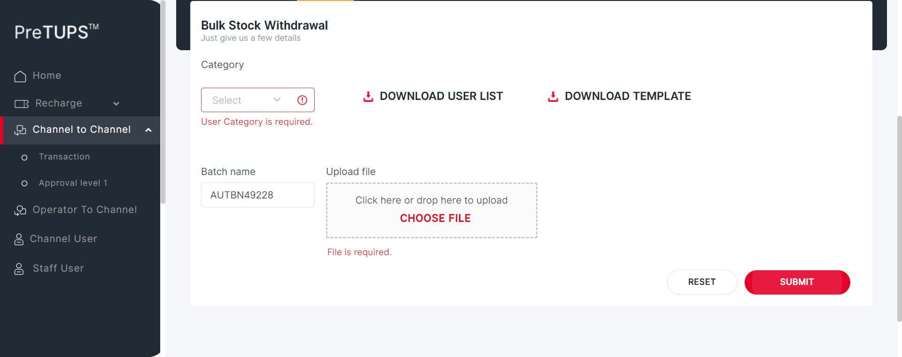
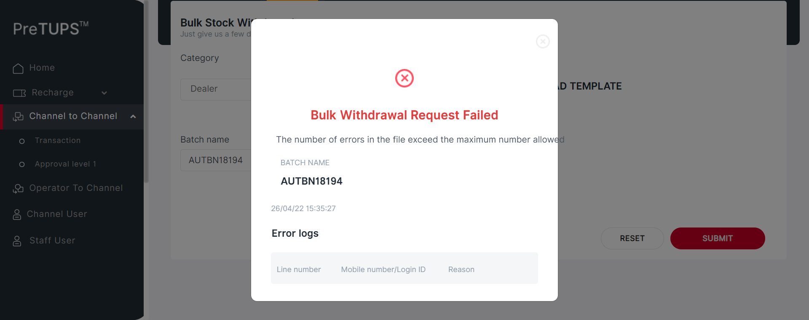
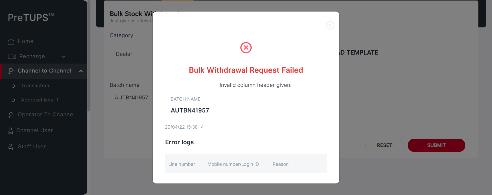
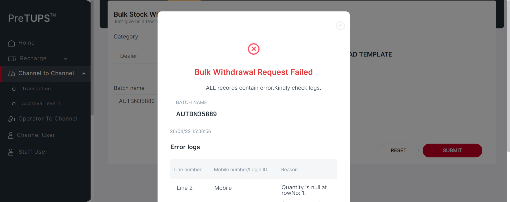

| Status | Timestamp | Details |
|---|---|---|
| info_outline | 3:28:26 PM | Category Code for Super Distributor: DIST |
| info_outline | 3:28:26 PM | Entered webInterface(Super Distributor) |
| info_outline | 3:28:26 PM | webInterface() :: select query: Select WEB_INTERFACE_ALLOWED from categories where category_name= ? |
| info_outline | 3:28:26 PM | Database Returns: WEB_INTERFACE_ALLOWED (Y) |
| info_outline | 3:28:26 PM | Exited webInterface() |
| info_outline | 3:28:26 PM | Entered performC2CBulkWithdrawal(Super Distributor, Dealer, 724699085750159, 1357) |
| info_outline | 3:28:26 PM | Login ID Found as: AUT_48675 |
| info_outline | 3:28:26 PM | Password Found as: com@2468 |
| info_outline | 3:28:28 PM | Trying to select Language |
| info_outline | 3:28:28 PM | Language selected successfully as: English |
| info_outline | 3:28:28 PM | Trying to enter Login ID |
| info_outline | 3:28:28 PM | Login ID entered successfully as: AUT_48675 |
| info_outline | 3:28:28 PM | Trying to enter Password |
| info_outline | 3:28:28 PM | Password entered successfully as: com@2468 |
| info_outline | 3:28:28 PM | Trying to click Login Button |
| info_outline | 3:28:28 PM | Login button clicked successfully |
| info_outline | 3:28:29 PM | Error Message Found on Login Screen: |
| info_outline | 3:28:32 PM | Trying clicking on C2C Heading |
| info_outline | 3:28:32 PM | User clicked C2C Heading Link. |
| info_outline | 3:28:32 PM | Trying clicking on C2C Transaction Heading |
| info_outline | 3:28:32 PM | User clicked C2C Transaction Heading Link. |
| info_outline | 3:28:32 PM | C2C Heading and Transaction Heading is clicked |
| info_outline | 3:28:32 PM | Trying clicking on C2C Bulk Operation Heading |
| info_outline | 3:28:36 PM | User clicked C2C Bulk Operation Heading. |
| info_outline | 3:28:36 PM | User clicked C2C Bulk Transfer Heading. |
| info_outline | 3:28:36 PM | Trying to select Category |
| info_outline | 3:28:37 PM | Category selected successfully as: Dealer |
| info_outline | 3:28:37 PM | Trying to delete file from directory... : .//src//test//resources//UploadDocuments//C2C_Bulk_Withdraw// |
| info_outline | 3:28:37 PM | Deleted all files from directory... : .//src//test//resources//UploadDocuments//C2C_Bulk_Withdraw// |
| info_outline | 3:28:42 PM | User clicked UserList Download Button. |
| info_outline | 3:28:42 PM | Trying to Count Files in Directory .//src//test//resources//UploadDocuments//C2C_Bulk_Withdraw// |
| info_outline | 3:28:42 PM | No OF Files under .//src//test//resources//UploadDocuments//C2C_Bulk_Withdraw// :: 1 |
| info_outline | 3:28:42 PM | Getting File Path.. |
| info_outline | 3:28:48 PM | COUNTER_msisdn = 3 |
| info_outline | 3:28:48 PM | COUNTER_login = 4 |
| info_outline | 3:28:48 PM | UNEMPTY STORED IN ARRAY TO wRITE IN EXCEL |
| info_outline | 3:28:48 PM | arr[0][0] 721068166078287 |
| info_outline | 3:28:48 PM | arr[0][1] AUT_53955 |
| info_outline | 3:28:48 PM | arr[0][2] 061114233 |
| info_outline | 3:28:48 PM | arr[0][3] 944 |
| info_outline | 3:28:48 PM | arr[0][4] POSTETOPUP |
| info_outline | 3:28:48 PM | User available balance : 4720 |
| info_outline | 3:28:48 PM | Trying to delete file from directory... : .//src//test//resources//UploadDocuments//C2C_Bulk_Withdraw// |
| info_outline | 3:28:48 PM | Deleted all files from directory... : .//src//test//resources//UploadDocuments//C2C_Bulk_Withdraw// |
| info_outline | 3:28:50 PM | User clicked Template Download Button. |
| info_outline | 3:28:50 PM | Getting File Path.. |
| info_outline | 3:28:55 PM | Getting File Path.. |
| info_outline | 3:29:00 PM | File Path:null |
| info_outline | 3:29:00 PM | Writing to excel .... |
| info_outline | 3:29:00 PM | PATHNAME : .//src//test//resources//UploadDocuments//C2C_Bulk_Withdraw//userTemplateList1650966864762.xls |
| info_outline | 3:29:00 PM | User entered Batch Name : AUTBN95617 |
| info_outline | 3:29:00 PM | Uploading File... |
| info_outline | 3:29:06 PM | Trying to click submit button.. |
| info_outline | 3:29:07 PM | User clicked Submit Button. |
| info_outline | 3:29:12 PM | User will enter Channel User Pin |
| info_outline | 3:29:12 PM | User entered Channel User Pin : 1357 |
| info_outline | 3:29:12 PM | User clicked Recharge button |
| info_outline | 3:29:13 PM | Success Popup is visible. |
| info_outline | 3:29:13 PM | Trying to get transfer Status. |
| info_outline | 3:29:13 PM | Actual Message fetched as : Bulk Withdrawal Request Initiated |
| info_outline | 3:29:13 PM | C2C Bulk Withdraw Transaction message Found as: Bulk Withdrawal Request Initiated |
| info_outline | 3:29:13 PM | C2C SUCCESS BATCH ID : NGCB220426.012 |
| error | 3:29:34 PM | Error while getting SSH Server Instance : com.jcraft.jsch.JSchException: java.net.ConnectException: Connection timed out: connect |
| check_circle | 3:29:34 PM | Catalina Log |
| info_outline | 3:29:34 PM | User clicked Done Recharge button |
| info_outline | 3:29:34 PM | Exited performC2CBulkWithdrawal() |
| low_priority | 3:29:35 PM | java.lang.NullPointerException at com.utils.ExcelUtility.getCellData(ExcelUtility.java:311) at angular.testscripts.prereuisitesangular.PreRequisite_C2CWithdrawBulk_Revamp.TestDataFeed1(PreRequisite_C2CWithdrawBulk_Revamp.java:474) at sun.reflect.NativeMethodAccessorImpl.invoke0(Native Method) at sun.reflect.NativeMethodAccessorImpl.invoke(Unknown Source) at sun.reflect.DelegatingMethodAccessorImpl.invoke(Unknown Source) at java.lang.reflect.Method.invoke(Unknown Source) at org.testng.internal.MethodInvocationHelper.invokeMethod(MethodInvocationHelper.java:124) at org.testng.internal.MethodInvocationHelper.invokeMethod(MethodInvocationHelper.java:74) at org.testng.internal.MethodInvocationHelper.invokeMethodNoCheckedException(MethodInvocationHelper.java:45) at org.testng.internal.MethodInvocationHelper.invokeDataProvider(MethodInvocationHelper.java:131) at org.testng.internal.Parameters.handleParameters(Parameters.java:706) at org.testng.internal.ParameterHandler.handleParameters(ParameterHandler.java:49) at org.testng.internal.ParameterHandler.createParameters(ParameterHandler.java:37) at org.testng.internal.Invoker.invokeTestMethods(Invoker.java:923) at org.testng.internal.TestMethodWorker.invokeTestMethods(TestMethodWorker.java:125) at org.testng.internal.TestMethodWorker.run(TestMethodWorker.java:109) at org.testng.TestRunner.privateRun(TestRunner.java:648) at org.testng.TestRunner.run(TestRunner.java:505) at org.testng.SuiteRunner.runTest(SuiteRunner.java:455) at org.testng.SuiteRunner.runSequentially(SuiteRunner.java:450) at org.testng.SuiteRunner.privateRun(SuiteRunner.java:415) at org.testng.SuiteRunner.run(SuiteRunner.java:364) at org.testng.SuiteRunnerWorker.runSuite(SuiteRunnerWorker.java:52) at org.testng.SuiteRunnerWorker.run(SuiteRunnerWorker.java:84) at org.testng.TestNG.runSuitesSequentially(TestNG.java:1208) at org.testng.TestNG.runSuitesLocally(TestNG.java:1137) at org.testng.TestNG.runSuites(TestNG.java:1049) at org.testng.TestNG.run(TestNG.java:1017) at org.testng.remote.AbstractRemoteTestNG.run(AbstractRemoteTestNG.java:115) at org.testng.remote.RemoteTestNG.initAndRun(RemoteTestNG.java:251) at org.testng.remote.RemoteTestNG.main(RemoteTestNG.java:77) |
| low_priority | 3:29:35 PM | java.lang.NullPointerException at com.utils.ExcelUtility.getCellData(ExcelUtility.java:311) at angular.testscripts.prereuisitesangular.PreRequisite_C2CWithdrawBulk_Revamp.TestDataFeed1(PreRequisite_C2CWithdrawBulk_Revamp.java:474) at sun.reflect.NativeMethodAccessorImpl.invoke0(Native Method) at sun.reflect.NativeMethodAccessorImpl.invoke(Unknown Source) at sun.reflect.DelegatingMethodAccessorImpl.invoke(Unknown Source) at java.lang.reflect.Method.invoke(Unknown Source) at org.testng.internal.MethodInvocationHelper.invokeMethod(MethodInvocationHelper.java:124) at org.testng.internal.MethodInvocationHelper.invokeMethod(MethodInvocationHelper.java:74) at org.testng.internal.MethodInvocationHelper.invokeMethodNoCheckedException(MethodInvocationHelper.java:45) at org.testng.internal.MethodInvocationHelper.invokeDataProvider(MethodInvocationHelper.java:131) at org.testng.internal.Parameters.handleParameters(Parameters.java:706) at org.testng.internal.ParameterHandler.handleParameters(ParameterHandler.java:49) at org.testng.internal.ParameterHandler.createParameters(ParameterHandler.java:37) at org.testng.internal.Invoker.invokeTestMethods(Invoker.java:923) at org.testng.internal.TestMethodWorker.invokeTestMethods(TestMethodWorker.java:125) at org.testng.internal.TestMethodWorker.run(TestMethodWorker.java:109) at org.testng.TestRunner.privateRun(TestRunner.java:648) at org.testng.TestRunner.run(TestRunner.java:505) at org.testng.SuiteRunner.runTest(SuiteRunner.java:455) at org.testng.SuiteRunner.runSequentially(SuiteRunner.java:450) at org.testng.SuiteRunner.privateRun(SuiteRunner.java:415) at org.testng.SuiteRunner.run(SuiteRunner.java:364) at org.testng.SuiteRunnerWorker.runSuite(SuiteRunnerWorker.java:52) at org.testng.SuiteRunnerWorker.run(SuiteRunnerWorker.java:84) at org.testng.TestNG.runSuitesSequentially(TestNG.java:1208) at org.testng.TestNG.runSuitesLocally(TestNG.java:1137) at org.testng.TestNG.runSuites(TestNG.java:1049) at org.testng.TestNG.run(TestNG.java:1017) at org.testng.remote.AbstractRemoteTestNG.run(AbstractRemoteTestNG.java:115) at org.testng.remote.RemoteTestNG.initAndRun(RemoteTestNG.java:251) at org.testng.remote.RemoteTestNG.main(RemoteTestNG.java:77) |
| low_priority | 3:29:35 PM | java.lang.NullPointerException at com.utils.ExcelUtility.getCellData(ExcelUtility.java:311) at angular.testscripts.prereuisitesangular.PreRequisite_C2CWithdrawBulk_Revamp.TestDataFeed1(PreRequisite_C2CWithdrawBulk_Revamp.java:474) at sun.reflect.NativeMethodAccessorImpl.invoke0(Native Method) at sun.reflect.NativeMethodAccessorImpl.invoke(Unknown Source) at sun.reflect.DelegatingMethodAccessorImpl.invoke(Unknown Source) at java.lang.reflect.Method.invoke(Unknown Source) at org.testng.internal.MethodInvocationHelper.invokeMethod(MethodInvocationHelper.java:124) at org.testng.internal.MethodInvocationHelper.invokeMethod(MethodInvocationHelper.java:74) at org.testng.internal.MethodInvocationHelper.invokeMethodNoCheckedException(MethodInvocationHelper.java:45) at org.testng.internal.MethodInvocationHelper.invokeDataProvider(MethodInvocationHelper.java:131) at org.testng.internal.Parameters.handleParameters(Parameters.java:706) at org.testng.internal.ParameterHandler.handleParameters(ParameterHandler.java:49) at org.testng.internal.ParameterHandler.createParameters(ParameterHandler.java:37) at org.testng.internal.Invoker.invokeTestMethods(Invoker.java:923) at org.testng.internal.TestMethodWorker.invokeTestMethods(TestMethodWorker.java:125) at org.testng.internal.TestMethodWorker.run(TestMethodWorker.java:109) at org.testng.TestRunner.privateRun(TestRunner.java:648) at org.testng.TestRunner.run(TestRunner.java:505) at org.testng.SuiteRunner.runTest(SuiteRunner.java:455) at org.testng.SuiteRunner.runSequentially(SuiteRunner.java:450) at org.testng.SuiteRunner.privateRun(SuiteRunner.java:415) at org.testng.SuiteRunner.run(SuiteRunner.java:364) at org.testng.SuiteRunnerWorker.runSuite(SuiteRunnerWorker.java:52) at org.testng.SuiteRunnerWorker.run(SuiteRunnerWorker.java:84) at org.testng.TestNG.runSuitesSequentially(TestNG.java:1208) at org.testng.TestNG.runSuitesLocally(TestNG.java:1137) at org.testng.TestNG.runSuites(TestNG.java:1049) at org.testng.TestNG.run(TestNG.java:1017) at org.testng.remote.AbstractRemoteTestNG.run(AbstractRemoteTestNG.java:115) at org.testng.remote.RemoteTestNG.initAndRun(RemoteTestNG.java:251) at org.testng.remote.RemoteTestNG.main(RemoteTestNG.java:77) |
| low_priority | 3:29:36 PM | java.lang.NullPointerException at com.utils.ExcelUtility.getCellData(ExcelUtility.java:311) at angular.testscripts.prereuisitesangular.PreRequisite_C2CWithdrawBulk_Revamp.TestDataFeed1(PreRequisite_C2CWithdrawBulk_Revamp.java:474) at sun.reflect.NativeMethodAccessorImpl.invoke0(Native Method) at sun.reflect.NativeMethodAccessorImpl.invoke(Unknown Source) at sun.reflect.DelegatingMethodAccessorImpl.invoke(Unknown Source) at java.lang.reflect.Method.invoke(Unknown Source) at org.testng.internal.MethodInvocationHelper.invokeMethod(MethodInvocationHelper.java:124) at org.testng.internal.MethodInvocationHelper.invokeMethod(MethodInvocationHelper.java:74) at org.testng.internal.MethodInvocationHelper.invokeMethodNoCheckedException(MethodInvocationHelper.java:45) at org.testng.internal.MethodInvocationHelper.invokeDataProvider(MethodInvocationHelper.java:131) at org.testng.internal.Parameters.handleParameters(Parameters.java:706) at org.testng.internal.ParameterHandler.handleParameters(ParameterHandler.java:49) at org.testng.internal.ParameterHandler.createParameters(ParameterHandler.java:37) at org.testng.internal.Invoker.invokeTestMethods(Invoker.java:923) at org.testng.internal.TestMethodWorker.invokeTestMethods(TestMethodWorker.java:125) at org.testng.internal.TestMethodWorker.run(TestMethodWorker.java:109) at org.testng.TestRunner.privateRun(TestRunner.java:648) at org.testng.TestRunner.run(TestRunner.java:505) at org.testng.SuiteRunner.runTest(SuiteRunner.java:455) at org.testng.SuiteRunner.runSequentially(SuiteRunner.java:450) at org.testng.SuiteRunner.privateRun(SuiteRunner.java:415) at org.testng.SuiteRunner.run(SuiteRunner.java:364) at org.testng.SuiteRunnerWorker.runSuite(SuiteRunnerWorker.java:52) at org.testng.SuiteRunnerWorker.run(SuiteRunnerWorker.java:84) at org.testng.TestNG.runSuitesSequentially(TestNG.java:1208) at org.testng.TestNG.runSuitesLocally(TestNG.java:1137) at org.testng.TestNG.runSuites(TestNG.java:1049) at org.testng.TestNG.run(TestNG.java:1017) at org.testng.remote.AbstractRemoteTestNG.run(AbstractRemoteTestNG.java:115) at org.testng.remote.RemoteTestNG.initAndRun(RemoteTestNG.java:251) at org.testng.remote.RemoteTestNG.main(RemoteTestNG.java:77) |
| low_priority | 3:29:36 PM | java.lang.NullPointerException at com.utils.ExcelUtility.getCellData(ExcelUtility.java:311) at angular.testscripts.prereuisitesangular.PreRequisite_C2CWithdrawBulk_Revamp.TestDataFeed1(PreRequisite_C2CWithdrawBulk_Revamp.java:474) at sun.reflect.NativeMethodAccessorImpl.invoke0(Native Method) at sun.reflect.NativeMethodAccessorImpl.invoke(Unknown Source) at sun.reflect.DelegatingMethodAccessorImpl.invoke(Unknown Source) at java.lang.reflect.Method.invoke(Unknown Source) at org.testng.internal.MethodInvocationHelper.invokeMethod(MethodInvocationHelper.java:124) at org.testng.internal.MethodInvocationHelper.invokeMethod(MethodInvocationHelper.java:74) at org.testng.internal.MethodInvocationHelper.invokeMethodNoCheckedException(MethodInvocationHelper.java:45) at org.testng.internal.MethodInvocationHelper.invokeDataProvider(MethodInvocationHelper.java:131) at org.testng.internal.Parameters.handleParameters(Parameters.java:706) at org.testng.internal.ParameterHandler.handleParameters(ParameterHandler.java:49) at org.testng.internal.ParameterHandler.createParameters(ParameterHandler.java:37) at org.testng.internal.Invoker.invokeTestMethods(Invoker.java:923) at org.testng.internal.TestMethodWorker.invokeTestMethods(TestMethodWorker.java:125) at org.testng.internal.TestMethodWorker.run(TestMethodWorker.java:109) at org.testng.TestRunner.privateRun(TestRunner.java:648) at org.testng.TestRunner.run(TestRunner.java:505) at org.testng.SuiteRunner.runTest(SuiteRunner.java:455) at org.testng.SuiteRunner.runSequentially(SuiteRunner.java:450) at org.testng.SuiteRunner.privateRun(SuiteRunner.java:415) at org.testng.SuiteRunner.run(SuiteRunner.java:364) at org.testng.SuiteRunnerWorker.runSuite(SuiteRunnerWorker.java:52) at org.testng.SuiteRunnerWorker.run(SuiteRunnerWorker.java:84) at org.testng.TestNG.runSuitesSequentially(TestNG.java:1208) at org.testng.TestNG.runSuitesLocally(TestNG.java:1137) at org.testng.TestNG.runSuites(TestNG.java:1049) at org.testng.TestNG.run(TestNG.java:1017) at org.testng.remote.AbstractRemoteTestNG.run(AbstractRemoteTestNG.java:115) at org.testng.remote.RemoteTestNG.initAndRun(RemoteTestNG.java:251) at org.testng.remote.RemoteTestNG.main(RemoteTestNG.java:77) |
| low_priority | 3:29:36 PM | java.lang.NullPointerException at com.utils.ExcelUtility.getCellData(ExcelUtility.java:311) at angular.testscripts.prereuisitesangular.PreRequisite_C2CWithdrawBulk_Revamp.TestDataFeed1(PreRequisite_C2CWithdrawBulk_Revamp.java:474) at sun.reflect.NativeMethodAccessorImpl.invoke0(Native Method) at sun.reflect.NativeMethodAccessorImpl.invoke(Unknown Source) at sun.reflect.DelegatingMethodAccessorImpl.invoke(Unknown Source) at java.lang.reflect.Method.invoke(Unknown Source) at org.testng.internal.MethodInvocationHelper.invokeMethod(MethodInvocationHelper.java:124) at org.testng.internal.MethodInvocationHelper.invokeMethod(MethodInvocationHelper.java:74) at org.testng.internal.MethodInvocationHelper.invokeMethodNoCheckedException(MethodInvocationHelper.java:45) at org.testng.internal.MethodInvocationHelper.invokeDataProvider(MethodInvocationHelper.java:131) at org.testng.internal.Parameters.handleParameters(Parameters.java:706) at org.testng.internal.ParameterHandler.handleParameters(ParameterHandler.java:49) at org.testng.internal.ParameterHandler.createParameters(ParameterHandler.java:37) at org.testng.internal.Invoker.invokeTestMethods(Invoker.java:923) at org.testng.internal.TestMethodWorker.invokeTestMethods(TestMethodWorker.java:125) at org.testng.internal.TestMethodWorker.run(TestMethodWorker.java:109) at org.testng.TestRunner.privateRun(TestRunner.java:648) at org.testng.TestRunner.run(TestRunner.java:505) at org.testng.SuiteRunner.runTest(SuiteRunner.java:455) at org.testng.SuiteRunner.runSequentially(SuiteRunner.java:450) at org.testng.SuiteRunner.privateRun(SuiteRunner.java:415) at org.testng.SuiteRunner.run(SuiteRunner.java:364) at org.testng.SuiteRunnerWorker.runSuite(SuiteRunnerWorker.java:52) at org.testng.SuiteRunnerWorker.run(SuiteRunnerWorker.java:84) at org.testng.TestNG.runSuitesSequentially(TestNG.java:1208) at org.testng.TestNG.runSuitesLocally(TestNG.java:1137) at org.testng.TestNG.runSuites(TestNG.java:1049) at org.testng.TestNG.run(TestNG.java:1017) at org.testng.remote.AbstractRemoteTestNG.run(AbstractRemoteTestNG.java:115) at org.testng.remote.RemoteTestNG.initAndRun(RemoteTestNG.java:251) at org.testng.remote.RemoteTestNG.main(RemoteTestNG.java:77) |
| info_outline | 3:29:37 PM | Entered :: getSystemPreference(TRF_RULE_USER_LEVEL_ALLOW) |
| info_outline | 3:29:37 PM | Query Repository Returns: DEFAULT_VALUE (true) |
| Status | Timestamp | Details |
|---|---|---|
| info_outline | 3:29:37 PM | Category Code for Super Distributor: DIST |
| info_outline | 3:29:37 PM | Entered webInterface(Super Distributor) |
| info_outline | 3:29:37 PM | webInterface() :: select query: Select WEB_INTERFACE_ALLOWED from categories where category_name= ? |
| info_outline | 3:29:37 PM | Database Returns: WEB_INTERFACE_ALLOWED (Y) |
| info_outline | 3:29:37 PM | Exited webInterface() |
| info_outline | 3:29:37 PM | Entered C2CBulkWithdrawalBlankCategory(Super Distributor, Dealer, 724699085750159, 1357) |
| info_outline | 3:29:38 PM | Login ID Found as: AUT_48675 |
| info_outline | 3:29:38 PM | Password Found as: com@2468 |
| info_outline | 3:29:38 PM | Trying to select Language |
| info_outline | 3:29:38 PM | Language selected successfully as: English |
| info_outline | 3:29:38 PM | Trying to enter Login ID |
| info_outline | 3:29:39 PM | Login ID entered successfully as: AUT_48675 |
| info_outline | 3:29:39 PM | Trying to enter Password |
| info_outline | 3:29:39 PM | Password entered successfully as: com@2468 |
| info_outline | 3:29:39 PM | Trying to click Login Button |
| info_outline | 3:29:39 PM | Login button clicked successfully |
| info_outline | 3:29:39 PM | Error Message Found on Login Screen: |
| info_outline | 3:29:40 PM | Trying clicking on C2C Heading |
| info_outline | 3:29:40 PM | User clicked C2C Heading Link. |
| info_outline | 3:29:40 PM | Trying clicking on C2C Transaction Heading |
| info_outline | 3:29:41 PM | User clicked C2C Transaction Heading Link. |
| info_outline | 3:29:41 PM | C2C Heading and Transaction Heading is clicked |
| info_outline | 3:29:41 PM | Trying clicking on C2C Bulk Operation Heading |
| info_outline | 3:29:41 PM | User clicked C2C Bulk Operation Heading. |
| info_outline | 3:29:41 PM | User clicked C2C Bulk Transfer Heading. |
| info_outline | 3:29:41 PM | User entered Batch Name : AUTBN49228 |
| info_outline | 3:29:41 PM | Trying to click submit button.. |
| info_outline | 3:29:41 PM | User clicked Submit Button. |
| info_outline | 3:29:41 PM | Trying to get Error Validation messaged from GUI |
| info_outline | 3:29:42 PM | errorMessageCaptured : User Category is required. |
| info_outline | 3:29:42 PM | Expected: User Category is required. |
| info_outline | 3:29:42 PM | Message Validation Success |
| info_outline | 3:29:42 PM |  |
| error | 3:30:03 PM | Error while getting SSH Server Instance : com.jcraft.jsch.JSchException: java.net.ConnectException: Connection timed out: connect |
| check_circle | 3:30:03 PM | Catalina Log |
| info_outline | 3:30:03 PM | Exited C2CBulkWithdrawalBlankCategory() |
| low_priority | 3:30:03 PM | java.lang.NullPointerException |
| low_priority | 3:30:03 PM | java.lang.NullPointerException |
| low_priority | 3:30:03 PM | java.lang.NullPointerException |
| low_priority | 3:30:03 PM | java.lang.NullPointerException |
| low_priority | 3:30:03 PM | java.lang.NullPointerException |
| low_priority | 3:30:03 PM | java.lang.NullPointerException |
| info_outline | 3:30:04 PM | Entered :: getSystemPreference(TRF_RULE_USER_LEVEL_ALLOW) |
| info_outline | 3:30:04 PM | Query Repository Returns: DEFAULT_VALUE (true) |
| Status | Timestamp | Details |
|---|---|---|
| info_outline | 3:30:04 PM | Category Code for Super Distributor: DIST |
| info_outline | 3:30:04 PM | Entered webInterface(Super Distributor) |
| info_outline | 3:30:04 PM | webInterface() :: select query: Select WEB_INTERFACE_ALLOWED from categories where category_name= ? |
| info_outline | 3:30:04 PM | Database Returns: WEB_INTERFACE_ALLOWED (Y) |
| info_outline | 3:30:04 PM | Exited webInterface() |
| info_outline | 3:30:04 PM | Entered C2CBulkWithdrawalBlankBatchName(Super Distributor, Dealer, 724699085750159, 1357) |
| info_outline | 3:30:04 PM | Login ID Found as: AUT_48675 |
| info_outline | 3:30:04 PM | Password Found as: com@2468 |
| info_outline | 3:30:05 PM | Trying to select Language |
| info_outline | 3:30:05 PM | Language selected successfully as: English |
| info_outline | 3:30:05 PM | Trying to enter Login ID |
| info_outline | 3:30:05 PM | Login ID entered successfully as: AUT_48675 |
| info_outline | 3:30:05 PM | Trying to enter Password |
| info_outline | 3:30:05 PM | Password entered successfully as: com@2468 |
| info_outline | 3:30:05 PM | Trying to click Login Button |
| info_outline | 3:30:05 PM | Login button clicked successfully |
| info_outline | 3:30:05 PM | Error Message Found on Login Screen: |
| info_outline | 3:30:07 PM | Trying clicking on C2C Heading |
| info_outline | 3:30:07 PM | User clicked C2C Heading Link. |
| info_outline | 3:30:07 PM | Trying clicking on C2C Transaction Heading |
| info_outline | 3:30:07 PM | User clicked C2C Transaction Heading Link. |
| info_outline | 3:30:07 PM | C2C Heading and Transaction Heading is clicked |
| info_outline | 3:30:07 PM | Trying clicking on C2C Bulk Operation Heading |
| info_outline | 3:30:07 PM | User clicked C2C Bulk Operation Heading. |
| info_outline | 3:30:07 PM | User clicked C2C Bulk Transfer Heading. |
| info_outline | 3:30:07 PM | Trying to select Category |
| info_outline | 3:30:08 PM | Category selected successfully as: Dealer |
| info_outline | 3:30:08 PM | Trying to click submit button.. |
| info_outline | 3:30:08 PM | User clicked Submit Button. |
| info_outline | 3:30:08 PM | Trying to get Error Validation messaged from GUI |
| cancel | 3:30:28 PM | org.openqa.selenium.TimeoutException: Expected condition failed: waiting for visibility of Proxy element for: DefaultElementLocator 'By.all({By.xpath: //input[@id='batchNameId']//parent::div//div[@class='invalid-feedback ng-star-inserted']//div})' (tried for 20 second(s) with 500 milliseconds interval)
at org.openqa.selenium.support.ui.WebDriverWait.timeoutException(WebDriverWait.java:82)
at org.openqa.selenium.support.ui.FluentWait.until(FluentWait.java:272)
at angular.pageobjects.c2ctransfer.C2CTransfers.batchNameErrorMessages(C2CTransfers.java:1502)
at angular.feature.C2CWithdrawBulkRevamp.performC2CBulkWithdrawalBlankBatchName(C2CWithdrawBulkRevamp.java:232)
at angular.testscripts.prereuisitesangular.PreRequisite_C2CWithdrawBulk_Revamp.A_03_Test_C2CBulkWithdrawalBlankBatchName(PreRequisite_C2CWithdrawBulk_Revamp.java:98)
at sun.reflect.NativeMethodAccessorImpl.invoke0(Native Method)
at sun.reflect.NativeMethodAccessorImpl.invoke(Unknown Source)
at sun.reflect.DelegatingMethodAccessorImpl.invoke(Unknown Source)
at java.lang.reflect.Method.invoke(Unknown Source)
at org.testng.internal.MethodInvocationHelper.invokeMethod(MethodInvocationHelper.java:124)
at org.testng.internal.Invoker.invokeMethod(Invoker.java:580)
at org.testng.internal.Invoker.invokeTestMethod(Invoker.java:716)
at org.testng.internal.Invoker.invokeTestMethods(Invoker.java:988)
at org.testng.internal.TestMethodWorker.invokeTestMethods(TestMethodWorker.java:125)
at org.testng.internal.TestMethodWorker.run(TestMethodWorker.java:109)
at org.testng.TestRunner.privateRun(TestRunner.java:648)
at org.testng.TestRunner.run(TestRunner.java:505)
at org.testng.SuiteRunner.runTest(SuiteRunner.java:455)
at org.testng.SuiteRunner.runSequentially(SuiteRunner.java:450)
at org.testng.SuiteRunner.privateRun(SuiteRunner.java:415)
at org.testng.SuiteRunner.run(SuiteRunner.java:364)
at org.testng.SuiteRunnerWorker.runSuite(SuiteRunnerWorker.java:52)
at org.testng.SuiteRunnerWorker.run(SuiteRunnerWorker.java:84)
at org.testng.TestNG.runSuitesSequentially(TestNG.java:1208)
at org.testng.TestNG.runSuitesLocally(TestNG.java:1137)
at org.testng.TestNG.runSuites(TestNG.java:1049)
at org.testng.TestNG.run(TestNG.java:1017)
at org.testng.remote.AbstractRemoteTestNG.run(AbstractRemoteTestNG.java:115)
at org.testng.remote.RemoteTestNG.initAndRun(RemoteTestNG.java:251)
at org.testng.remote.RemoteTestNG.main(RemoteTestNG.java:77)
Caused by: org.openqa.selenium.NoSuchElementException: Cannot locate an element using By.all({By.xpath: //input[@id='batchNameId']//parent::div//div[@class='invalid-feedback ng-star-inserted']//div})
For documentation on this error, please visit: http://seleniumhq.org/exceptions/no_such_element.html
Build info: version: '3.10.0', revision: '176b4a9', time: '2018-03-02T19:03:16.397Z'
System info: host: 'MCKL-20005142', ip: '192.168.1.40', os.name: 'Windows 10', os.arch: 'amd64', os.version: '10.0', java.version: '1.8.0_291'
Driver info: driver.version: RemoteWebDriver
at org.openqa.selenium.support.pagefactory.ByAll.findElement(ByAll.java:58)
at org.openqa.selenium.remote.RemoteWebDriver.findElement(RemoteWebDriver.java:363)
at org.openqa.selenium.support.pagefactory.DefaultElementLocator.findElement(DefaultElementLocator.java:69)
at org.openqa.selenium.support.pagefactory.internal.LocatingElementHandler.invoke(LocatingElementHandler.java:38)
at com.sun.proxy.$Proxy19.isDisplayed(Unknown Source)
at org.openqa.selenium.support.ui.ExpectedConditions.elementIfVisible(ExpectedConditions.java:315)
at org.openqa.selenium.support.ui.ExpectedConditions.access$100(ExpectedConditions.java:44)
at org.openqa.selenium.support.ui.ExpectedConditions$10.apply(ExpectedConditions.java:301)
at org.openqa.selenium.support.ui.ExpectedConditions$10.apply(ExpectedConditions.java:298)
at org.openqa.selenium.support.ui.FluentWait.until(FluentWait.java:249)
... 28 more
|
| error | 3:30:49 PM | Error while getting SSH Server Instance : com.jcraft.jsch.JSchException: java.net.ConnectException: Connection timed out: connect |
| cancel | 3:30:49 PM | Catalina Log |
| low_priority | 3:30:50 PM | java.lang.NullPointerException |
| low_priority | 3:30:50 PM | java.lang.NullPointerException |
| low_priority | 3:30:50 PM | java.lang.NullPointerException |
| low_priority | 3:30:51 PM | java.lang.NullPointerException |
| low_priority | 3:30:51 PM | java.lang.NullPointerException |
| low_priority | 3:30:51 PM | java.lang.NullPointerException |
| info_outline | 3:30:51 PM | Entered :: getSystemPreference(TRF_RULE_USER_LEVEL_ALLOW) |
| info_outline | 3:30:52 PM | Query Repository Returns: DEFAULT_VALUE (true) |
| Status | Timestamp | Details |
|---|---|---|
| info_outline | 3:30:52 PM | Category Code for Super Distributor: DIST |
| info_outline | 3:30:52 PM | Entered webInterface(Super Distributor) |
| info_outline | 3:30:52 PM | webInterface() :: select query: Select WEB_INTERFACE_ALLOWED from categories where category_name= ? |
| info_outline | 3:30:52 PM | Database Returns: WEB_INTERFACE_ALLOWED (Y) |
| info_outline | 3:30:52 PM | Exited webInterface() |
| info_outline | 3:30:52 PM | Entered C2CBulkWithdrawalWithoutUpload(Super Distributor, Dealer, 724699085750159, 1357) |
| info_outline | 3:30:52 PM | Login ID Found as: AUT_48675 |
| info_outline | 3:30:52 PM | Password Found as: com@2468 |
| info_outline | 3:30:52 PM | Trying to select Language |
| info_outline | 3:30:53 PM | Language selected successfully as: English |
| info_outline | 3:30:53 PM | Trying to enter Login ID |
| info_outline | 3:30:53 PM | Login ID entered successfully as: AUT_48675 |
| info_outline | 3:30:53 PM | Trying to enter Password |
| info_outline | 3:30:53 PM | Password entered successfully as: com@2468 |
| info_outline | 3:30:53 PM | Trying to click Login Button |
| info_outline | 3:30:53 PM | Login button clicked successfully |
| info_outline | 3:30:53 PM | Error Message Found on Login Screen: |
| info_outline | 3:30:55 PM | Trying clicking on C2C Heading |
| info_outline | 3:30:55 PM | User clicked C2C Heading Link. |
| info_outline | 3:30:55 PM | Trying clicking on C2C Transaction Heading |
| info_outline | 3:30:55 PM | User clicked C2C Transaction Heading Link. |
| info_outline | 3:30:55 PM | C2C Heading and Transaction Heading is clicked |
| info_outline | 3:30:55 PM | Trying clicking on C2C Bulk Operation Heading |
| info_outline | 3:30:55 PM | User clicked C2C Bulk Operation Heading. |
| info_outline | 3:30:55 PM | User clicked C2C Bulk Transfer Heading. |
| info_outline | 3:30:55 PM | Trying to select Category |
| info_outline | 3:30:56 PM | Category selected successfully as: Dealer |
| info_outline | 3:30:56 PM | User entered Batch Name : AUTBN75877 |
| info_outline | 3:30:56 PM | Trying to click submit button.. |
| info_outline | 3:30:57 PM | User clicked Submit Button. |
| info_outline | 3:30:57 PM | Trying to get Error Validation messaged from GUI |
| cancel | 3:31:17 PM | org.openqa.selenium.TimeoutException: Expected condition failed: waiting for visibility of Proxy element for: DefaultElementLocator 'By.all({By.xpath: //div[@class='invalid-feedback ng-star-inserted']//div[@class='ng-star-inserted']})' (tried for 20 second(s) with 500 milliseconds interval)
at org.openqa.selenium.support.ui.WebDriverWait.timeoutException(WebDriverWait.java:82)
at org.openqa.selenium.support.ui.FluentWait.until(FluentWait.java:272)
at angular.pageobjects.c2ctransfer.C2CTransfers.validationErrorsOnGUI(C2CTransfers.java:1372)
at angular.feature.C2CWithdrawBulkRevamp.performC2CBulkWithdrawalWithoutUpload(C2CWithdrawBulkRevamp.java:273)
at angular.testscripts.prereuisitesangular.PreRequisite_C2CWithdrawBulk_Revamp.A_04_Test_C2CBulkWithdrawalWithoutUpload(PreRequisite_C2CWithdrawBulk_Revamp.java:125)
at sun.reflect.NativeMethodAccessorImpl.invoke0(Native Method)
at sun.reflect.NativeMethodAccessorImpl.invoke(Unknown Source)
at sun.reflect.DelegatingMethodAccessorImpl.invoke(Unknown Source)
at java.lang.reflect.Method.invoke(Unknown Source)
at org.testng.internal.MethodInvocationHelper.invokeMethod(MethodInvocationHelper.java:124)
at org.testng.internal.Invoker.invokeMethod(Invoker.java:580)
at org.testng.internal.Invoker.invokeTestMethod(Invoker.java:716)
at org.testng.internal.Invoker.invokeTestMethods(Invoker.java:988)
at org.testng.internal.TestMethodWorker.invokeTestMethods(TestMethodWorker.java:125)
at org.testng.internal.TestMethodWorker.run(TestMethodWorker.java:109)
at org.testng.TestRunner.privateRun(TestRunner.java:648)
at org.testng.TestRunner.run(TestRunner.java:505)
at org.testng.SuiteRunner.runTest(SuiteRunner.java:455)
at org.testng.SuiteRunner.runSequentially(SuiteRunner.java:450)
at org.testng.SuiteRunner.privateRun(SuiteRunner.java:415)
at org.testng.SuiteRunner.run(SuiteRunner.java:364)
at org.testng.SuiteRunnerWorker.runSuite(SuiteRunnerWorker.java:52)
at org.testng.SuiteRunnerWorker.run(SuiteRunnerWorker.java:84)
at org.testng.TestNG.runSuitesSequentially(TestNG.java:1208)
at org.testng.TestNG.runSuitesLocally(TestNG.java:1137)
at org.testng.TestNG.runSuites(TestNG.java:1049)
at org.testng.TestNG.run(TestNG.java:1017)
at org.testng.remote.AbstractRemoteTestNG.run(AbstractRemoteTestNG.java:115)
at org.testng.remote.RemoteTestNG.initAndRun(RemoteTestNG.java:251)
at org.testng.remote.RemoteTestNG.main(RemoteTestNG.java:77)
Caused by: org.openqa.selenium.NoSuchElementException: Cannot locate an element using By.all({By.xpath: //div[@class='invalid-feedback ng-star-inserted']//div[@class='ng-star-inserted']})
For documentation on this error, please visit: http://seleniumhq.org/exceptions/no_such_element.html
Build info: version: '3.10.0', revision: '176b4a9', time: '2018-03-02T19:03:16.397Z'
System info: host: 'MCKL-20005142', ip: '192.168.1.40', os.name: 'Windows 10', os.arch: 'amd64', os.version: '10.0', java.version: '1.8.0_291'
Driver info: driver.version: RemoteWebDriver
at org.openqa.selenium.support.pagefactory.ByAll.findElement(ByAll.java:58)
at org.openqa.selenium.remote.RemoteWebDriver.findElement(RemoteWebDriver.java:363)
at org.openqa.selenium.support.pagefactory.DefaultElementLocator.findElement(DefaultElementLocator.java:69)
at org.openqa.selenium.support.pagefactory.internal.LocatingElementHandler.invoke(LocatingElementHandler.java:38)
at com.sun.proxy.$Proxy19.isDisplayed(Unknown Source)
at org.openqa.selenium.support.ui.ExpectedConditions.elementIfVisible(ExpectedConditions.java:315)
at org.openqa.selenium.support.ui.ExpectedConditions.access$100(ExpectedConditions.java:44)
at org.openqa.selenium.support.ui.ExpectedConditions$10.apply(ExpectedConditions.java:301)
at org.openqa.selenium.support.ui.ExpectedConditions$10.apply(ExpectedConditions.java:298)
at org.openqa.selenium.support.ui.FluentWait.until(FluentWait.java:249)
... 28 more
|
| error | 3:31:38 PM | Error while getting SSH Server Instance : com.jcraft.jsch.JSchException: java.net.ConnectException: Connection timed out: connect |
| cancel | 3:31:38 PM | Catalina Log |
| low_priority | 3:31:38 PM | java.lang.NullPointerException |
| low_priority | 3:31:38 PM | java.lang.NullPointerException |
| low_priority | 3:31:38 PM | java.lang.NullPointerException |
| low_priority | 3:31:38 PM | java.lang.NullPointerException |
| low_priority | 3:31:39 PM | java.lang.NullPointerException |
| low_priority | 3:31:39 PM | java.lang.NullPointerException |
| info_outline | 3:31:39 PM | Entered :: getSystemPreference(TRF_RULE_USER_LEVEL_ALLOW) |
| info_outline | 3:31:39 PM | Query Repository Returns: DEFAULT_VALUE (true) |
| Status | Timestamp | Details |
|---|---|---|
| info_outline | 3:31:39 PM | Category Code for Super Distributor: DIST |
| info_outline | 3:31:39 PM | Entered webInterface(Super Distributor) |
| info_outline | 3:31:39 PM | webInterface() :: select query: Select WEB_INTERFACE_ALLOWED from categories where category_name= ? |
| info_outline | 3:31:39 PM | Database Returns: WEB_INTERFACE_ALLOWED (Y) |
| info_outline | 3:31:39 PM | Exited webInterface() |
| info_outline | 3:31:39 PM | Entered performC2CBulkWithdrawalResetButton(Super Distributor, Dealer, 724699085750159, 1357) |
| info_outline | 3:31:39 PM | Login ID Found as: AUT_48675 |
| info_outline | 3:31:39 PM | Password Found as: com@2468 |
| info_outline | 3:31:40 PM | Trying to select Language |
| info_outline | 3:31:40 PM | Language selected successfully as: English |
| info_outline | 3:31:40 PM | Trying to enter Login ID |
| info_outline | 3:31:40 PM | Login ID entered successfully as: AUT_48675 |
| info_outline | 3:31:40 PM | Trying to enter Password |
| info_outline | 3:31:40 PM | Password entered successfully as: com@2468 |
| info_outline | 3:31:40 PM | Trying to click Login Button |
| info_outline | 3:31:40 PM | Login button clicked successfully |
| info_outline | 3:31:40 PM | Error Message Found on Login Screen: |
| info_outline | 3:31:42 PM | Trying clicking on C2C Heading |
| info_outline | 3:31:42 PM | User clicked C2C Heading Link. |
| info_outline | 3:31:42 PM | Trying clicking on C2C Transaction Heading |
| info_outline | 3:31:42 PM | User clicked C2C Transaction Heading Link. |
| info_outline | 3:31:42 PM | C2C Heading and Transaction Heading is clicked |
| info_outline | 3:31:42 PM | Trying clicking on C2C Bulk Operation Heading |
| info_outline | 3:31:42 PM | User clicked C2C Bulk Operation Heading. |
| info_outline | 3:31:42 PM | User clicked C2C Bulk Transfer Heading. |
| info_outline | 3:31:42 PM | Trying to select Category |
| info_outline | 3:31:43 PM | Category selected successfully as: Dealer |
| info_outline | 3:31:48 PM | User clicked UserList Download Button. |
| info_outline | 3:31:50 PM | User clicked Template Download Button. |
| info_outline | 3:31:51 PM | User entered Batch Name : AUTBN26253 |
| info_outline | 3:31:51 PM | Trying to Reset Button |
| info_outline | 3:31:51 PM | Trying to click submit button.. |
| info_outline | 3:31:51 PM | User clicked Submit Button. |
| info_outline | 3:31:51 PM | Stored Category: false |
| info_outline | 3:31:51 PM | Stored Batch Name: |
| info_outline | 3:31:51 PM | All fields are blank hence Reset button click successful |
| error | 3:32:12 PM | Error while getting SSH Server Instance : com.jcraft.jsch.JSchException: java.net.ConnectException: Connection timed out: connect |
| check_circle | 3:32:12 PM | Catalina Log |
| info_outline | 3:32:12 PM | Exited performC2CBulkWithdrawalResetButton() |
| low_priority | 3:32:12 PM | java.lang.NullPointerException |
| low_priority | 3:32:12 PM | java.lang.NullPointerException |
| low_priority | 3:32:12 PM | java.lang.NullPointerException |
| low_priority | 3:32:12 PM | java.lang.NullPointerException |
| low_priority | 3:32:12 PM | java.lang.NullPointerException |
| low_priority | 3:32:12 PM | java.lang.NullPointerException |
| info_outline | 3:32:13 PM | Entered :: getSystemPreference(TRF_RULE_USER_LEVEL_ALLOW) |
| info_outline | 3:32:13 PM | Query Repository Returns: DEFAULT_VALUE (true) |
| Status | Timestamp | Details |
|---|---|---|
| info_outline | 3:32:13 PM | Category Code for Super Distributor: DIST |
| info_outline | 3:32:13 PM | Entered webInterface(Super Distributor) |
| info_outline | 3:32:13 PM | webInterface() :: select query: Select WEB_INTERFACE_ALLOWED from categories where category_name= ? |
| info_outline | 3:32:13 PM | Database Returns: WEB_INTERFACE_ALLOWED (Y) |
| info_outline | 3:32:13 PM | Exited webInterface() |
| info_outline | 3:32:13 PM | Entered C2CBulkWithdrawalDownloadUserListWithoutCategory(Super Distributor, Dealer, 724699085750159, 1357) |
| info_outline | 3:32:13 PM | Login ID Found as: AUT_48675 |
| info_outline | 3:32:13 PM | Password Found as: com@2468 |
| info_outline | 3:32:14 PM | Trying to select Language |
| info_outline | 3:32:14 PM | Language selected successfully as: English |
| info_outline | 3:32:14 PM | Trying to enter Login ID |
| info_outline | 3:32:14 PM | Login ID entered successfully as: AUT_48675 |
| info_outline | 3:32:14 PM | Trying to enter Password |
| info_outline | 3:32:14 PM | Password entered successfully as: com@2468 |
| info_outline | 3:32:14 PM | Trying to click Login Button |
| info_outline | 3:32:14 PM | Login button clicked successfully |
| info_outline | 3:32:14 PM | Error Message Found on Login Screen: |
| info_outline | 3:32:16 PM | Trying clicking on C2C Heading |
| info_outline | 3:32:16 PM | User clicked C2C Heading Link. |
| info_outline | 3:32:16 PM | Trying clicking on C2C Transaction Heading |
| info_outline | 3:32:16 PM | User clicked C2C Transaction Heading Link. |
| info_outline | 3:32:16 PM | C2C Heading and Transaction Heading is clicked |
| info_outline | 3:32:16 PM | Trying clicking on C2C Bulk Operation Heading |
| info_outline | 3:32:16 PM | User clicked C2C Bulk Operation Heading. |
| info_outline | 3:32:16 PM | User clicked C2C Bulk Transfer Heading. |
| info_outline | 3:32:21 PM | User clicked UserList Download Button. |
| info_outline | 3:32:21 PM | Trying to get Error Validation messaged from GUI |
| cancel | 3:32:42 PM | org.openqa.selenium.TimeoutException: Expected condition failed: waiting for visibility of Proxy element for: DefaultElementLocator 'By.all({By.xpath: //div[@class='invalid-feedback ng-star-inserted']//div[@class='ng-star-inserted']})' (tried for 20 second(s) with 500 milliseconds interval)
at org.openqa.selenium.support.ui.WebDriverWait.timeoutException(WebDriverWait.java:82)
at org.openqa.selenium.support.ui.FluentWait.until(FluentWait.java:272)
at angular.pageobjects.c2ctransfer.C2CTransfers.validationErrorsOnGUI(C2CTransfers.java:1372)
at angular.feature.C2CWithdrawBulkRevamp.performC2CBulkWithdrawalDownloadUserListWithoutCategory(C2CWithdrawBulkRevamp.java:358)
at angular.testscripts.prereuisitesangular.PreRequisite_C2CWithdrawBulk_Revamp.A_06_Test_C2CBulkWithdrawalDownloadUserListWithoutCategory(PreRequisite_C2CWithdrawBulk_Revamp.java:177)
at sun.reflect.NativeMethodAccessorImpl.invoke0(Native Method)
at sun.reflect.NativeMethodAccessorImpl.invoke(Unknown Source)
at sun.reflect.DelegatingMethodAccessorImpl.invoke(Unknown Source)
at java.lang.reflect.Method.invoke(Unknown Source)
at org.testng.internal.MethodInvocationHelper.invokeMethod(MethodInvocationHelper.java:124)
at org.testng.internal.Invoker.invokeMethod(Invoker.java:580)
at org.testng.internal.Invoker.invokeTestMethod(Invoker.java:716)
at org.testng.internal.Invoker.invokeTestMethods(Invoker.java:988)
at org.testng.internal.TestMethodWorker.invokeTestMethods(TestMethodWorker.java:125)
at org.testng.internal.TestMethodWorker.run(TestMethodWorker.java:109)
at org.testng.TestRunner.privateRun(TestRunner.java:648)
at org.testng.TestRunner.run(TestRunner.java:505)
at org.testng.SuiteRunner.runTest(SuiteRunner.java:455)
at org.testng.SuiteRunner.runSequentially(SuiteRunner.java:450)
at org.testng.SuiteRunner.privateRun(SuiteRunner.java:415)
at org.testng.SuiteRunner.run(SuiteRunner.java:364)
at org.testng.SuiteRunnerWorker.runSuite(SuiteRunnerWorker.java:52)
at org.testng.SuiteRunnerWorker.run(SuiteRunnerWorker.java:84)
at org.testng.TestNG.runSuitesSequentially(TestNG.java:1208)
at org.testng.TestNG.runSuitesLocally(TestNG.java:1137)
at org.testng.TestNG.runSuites(TestNG.java:1049)
at org.testng.TestNG.run(TestNG.java:1017)
at org.testng.remote.AbstractRemoteTestNG.run(AbstractRemoteTestNG.java:115)
at org.testng.remote.RemoteTestNG.initAndRun(RemoteTestNG.java:251)
at org.testng.remote.RemoteTestNG.main(RemoteTestNG.java:77)
Caused by: org.openqa.selenium.NoSuchElementException: Cannot locate an element using By.all({By.xpath: //div[@class='invalid-feedback ng-star-inserted']//div[@class='ng-star-inserted']})
For documentation on this error, please visit: http://seleniumhq.org/exceptions/no_such_element.html
Build info: version: '3.10.0', revision: '176b4a9', time: '2018-03-02T19:03:16.397Z'
System info: host: 'MCKL-20005142', ip: '192.168.1.40', os.name: 'Windows 10', os.arch: 'amd64', os.version: '10.0', java.version: '1.8.0_291'
Driver info: driver.version: RemoteWebDriver
at org.openqa.selenium.support.pagefactory.ByAll.findElement(ByAll.java:58)
at org.openqa.selenium.remote.RemoteWebDriver.findElement(RemoteWebDriver.java:363)
at org.openqa.selenium.support.pagefactory.DefaultElementLocator.findElement(DefaultElementLocator.java:69)
at org.openqa.selenium.support.pagefactory.internal.LocatingElementHandler.invoke(LocatingElementHandler.java:38)
at com.sun.proxy.$Proxy19.isDisplayed(Unknown Source)
at org.openqa.selenium.support.ui.ExpectedConditions.elementIfVisible(ExpectedConditions.java:315)
at org.openqa.selenium.support.ui.ExpectedConditions.access$100(ExpectedConditions.java:44)
at org.openqa.selenium.support.ui.ExpectedConditions$10.apply(ExpectedConditions.java:301)
at org.openqa.selenium.support.ui.ExpectedConditions$10.apply(ExpectedConditions.java:298)
at org.openqa.selenium.support.ui.FluentWait.until(FluentWait.java:249)
... 28 more
|
| error | 3:33:03 PM | Error while getting SSH Server Instance : com.jcraft.jsch.JSchException: java.net.ConnectException: Connection timed out: connect |
| cancel | 3:33:03 PM | Catalina Log |
| low_priority | 3:33:03 PM | java.lang.NullPointerException |
| low_priority | 3:33:03 PM | java.lang.NullPointerException |
| low_priority | 3:33:03 PM | java.lang.NullPointerException |
| low_priority | 3:33:03 PM | java.lang.NullPointerException |
| low_priority | 3:33:03 PM | java.lang.NullPointerException |
| low_priority | 3:33:04 PM | java.lang.NullPointerException |
| info_outline | 3:33:04 PM | Entered :: getSystemPreference(TRF_RULE_USER_LEVEL_ALLOW) |
| info_outline | 3:33:04 PM | Query Repository Returns: DEFAULT_VALUE (true) |
| Status | Timestamp | Details |
|---|---|---|
| info_outline | 3:33:04 PM | Category Code for Super Distributor: DIST |
| info_outline | 3:33:04 PM | Entered webInterface(Super Distributor) |
| info_outline | 3:33:04 PM | webInterface() :: select query: Select WEB_INTERFACE_ALLOWED from categories where category_name= ? |
| info_outline | 3:33:04 PM | Database Returns: WEB_INTERFACE_ALLOWED (Y) |
| info_outline | 3:33:04 PM | Exited webInterface() |
| info_outline | 3:33:04 PM | Entered C2CBulkWithdrawalDownloadTemplateWithoutCategory(Super Distributor, Dealer, 724699085750159, 1357) |
| info_outline | 3:33:04 PM | Login ID Found as: AUT_48675 |
| info_outline | 3:33:04 PM | Password Found as: com@2468 |
| info_outline | 3:33:05 PM | Trying to select Language |
| info_outline | 3:33:05 PM | Language selected successfully as: English |
| info_outline | 3:33:05 PM | Trying to enter Login ID |
| info_outline | 3:33:05 PM | Login ID entered successfully as: AUT_48675 |
| info_outline | 3:33:05 PM | Trying to enter Password |
| info_outline | 3:33:06 PM | Password entered successfully as: com@2468 |
| info_outline | 3:33:06 PM | Trying to click Login Button |
| info_outline | 3:33:06 PM | Login button clicked successfully |
| info_outline | 3:33:06 PM | Error Message Found on Login Screen: |
| info_outline | 3:33:07 PM | Trying clicking on C2C Heading |
| info_outline | 3:33:07 PM | User clicked C2C Heading Link. |
| info_outline | 3:33:07 PM | Trying clicking on C2C Transaction Heading |
| info_outline | 3:33:07 PM | User clicked C2C Transaction Heading Link. |
| info_outline | 3:33:07 PM | C2C Heading and Transaction Heading is clicked |
| info_outline | 3:33:07 PM | Trying clicking on C2C Bulk Operation Heading |
| info_outline | 3:33:08 PM | User clicked C2C Bulk Operation Heading. |
| info_outline | 3:33:08 PM | User clicked C2C Bulk Transfer Heading. |
| info_outline | 3:33:08 PM | Trying to Count Files in Directory .//src//test//resources//UploadDocuments//C2C_Bulk_Withdraw// |
| info_outline | 3:33:08 PM | No OF Files under .//src//test//resources//UploadDocuments//C2C_Bulk_Withdraw// :: 3 |
| info_outline | 3:33:10 PM | User clicked Template Download Button. |
| info_outline | 3:33:10 PM | Trying to Count Files in Directory .//src//test//resources//UploadDocuments//C2C_Bulk_Withdraw// |
| info_outline | 3:33:10 PM | No OF Files under .//src//test//resources//UploadDocuments//C2C_Bulk_Withdraw// :: 4 |
| info_outline | 3:33:10 PM | No Of Files Before Download = 3 |
| info_outline | 3:33:10 PM | No Of Files After Download = 4 |
| info_outline | 3:33:10 PM | Template File Downloaded Successfully |
| error | 3:33:31 PM | Error while getting SSH Server Instance : com.jcraft.jsch.JSchException: java.net.ConnectException: Connection timed out: connect |
| check_circle | 3:33:31 PM | Catalina Log |
| info_outline | 3:33:31 PM | Exited C2CBulkWithdrawalDownloadTemplateWithoutCategory() |
| low_priority | 3:33:31 PM | java.lang.NullPointerException |
| low_priority | 3:33:31 PM | java.lang.NullPointerException |
| low_priority | 3:33:31 PM | java.lang.NullPointerException |
| low_priority | 3:33:31 PM | java.lang.NullPointerException |
| low_priority | 3:33:31 PM | java.lang.NullPointerException |
| low_priority | 3:33:31 PM | java.lang.NullPointerException |
| info_outline | 3:33:32 PM | Entered :: getSystemPreference(TRF_RULE_USER_LEVEL_ALLOW) |
| info_outline | 3:33:32 PM | Query Repository Returns: DEFAULT_VALUE (true) |
| Status | Timestamp | Details |
|---|---|---|
| info_outline | 3:33:32 PM | Category Code for Super Distributor: DIST |
| info_outline | 3:33:32 PM | Entered webInterface(Super Distributor) |
| info_outline | 3:33:32 PM | webInterface() :: select query: Select WEB_INTERFACE_ALLOWED from categories where category_name= ? |
| info_outline | 3:33:32 PM | Database Returns: WEB_INTERFACE_ALLOWED (Y) |
| info_outline | 3:33:32 PM | Exited webInterface() |
| info_outline | 3:33:32 PM | Entered C2CBulkWithdrawalFileUploadType(Super Distributor, Dealer, 724699085750159, 1357) |
| info_outline | 3:33:32 PM | Login ID Found as: AUT_48675 |
| info_outline | 3:33:32 PM | Password Found as: com@2468 |
| info_outline | 3:33:32 PM | Trying to select Language |
| info_outline | 3:33:33 PM | Language selected successfully as: English |
| info_outline | 3:33:33 PM | Trying to enter Login ID |
| info_outline | 3:33:33 PM | Login ID entered successfully as: AUT_48675 |
| info_outline | 3:33:33 PM | Trying to enter Password |
| info_outline | 3:33:33 PM | Password entered successfully as: com@2468 |
| info_outline | 3:33:33 PM | Trying to click Login Button |
| info_outline | 3:33:33 PM | Login button clicked successfully |
| info_outline | 3:33:33 PM | Error Message Found on Login Screen: |
| info_outline | 3:33:35 PM | Trying clicking on C2C Heading |
| info_outline | 3:33:35 PM | User clicked C2C Heading Link. |
| info_outline | 3:33:35 PM | Trying clicking on C2C Transaction Heading |
| info_outline | 3:33:35 PM | User clicked C2C Transaction Heading Link. |
| info_outline | 3:33:35 PM | C2C Heading and Transaction Heading is clicked |
| info_outline | 3:33:35 PM | Trying clicking on C2C Bulk Operation Heading |
| info_outline | 3:33:35 PM | User clicked C2C Bulk Operation Heading. |
| info_outline | 3:33:35 PM | User clicked C2C Bulk Transfer Heading. |
| info_outline | 3:33:35 PM | Trying to select Category |
| info_outline | 3:33:36 PM | Category selected successfully as: Dealer |
| info_outline | 3:33:36 PM | User entered Batch Name : 7235179915 |
| info_outline | 3:33:36 PM | Uploading File... |
| info_outline | 3:33:42 PM | Trying to get Error Validation messaged from GUI |
| cancel | 3:34:03 PM | org.openqa.selenium.TimeoutException: Expected condition failed: waiting for visibility of element located by By.xpath: //div[@class='invalid-file-format ng-star-inserted']//div (tried for 20 second(s) with 500 milliseconds interval) at org.openqa.selenium.support.ui.WebDriverWait.timeoutException(WebDriverWait.java:82) at org.openqa.selenium.support.ui.FluentWait.until(FluentWait.java:272) at angular.pageobjects.c2ctransfer.C2CTransfers.fileUploadTypeErrorMessage(C2CTransfers.java:1679) at angular.feature.C2CWithdrawBulkRevamp.performC2CBulkWithdrawalFileUploadType(C2CWithdrawBulkRevamp.java:445) at angular.testscripts.prereuisitesangular.PreRequisite_C2CWithdrawBulk_Revamp.A_08_Test_C2CBulkWithdrawFileUploadType(PreRequisite_C2CWithdrawBulk_Revamp.java:227) at sun.reflect.NativeMethodAccessorImpl.invoke0(Native Method) at sun.reflect.NativeMethodAccessorImpl.invoke(Unknown Source) at sun.reflect.DelegatingMethodAccessorImpl.invoke(Unknown Source) at java.lang.reflect.Method.invoke(Unknown Source) at org.testng.internal.MethodInvocationHelper.invokeMethod(MethodInvocationHelper.java:124) at org.testng.internal.Invoker.invokeMethod(Invoker.java:580) at org.testng.internal.Invoker.invokeTestMethod(Invoker.java:716) at org.testng.internal.Invoker.invokeTestMethods(Invoker.java:988) at org.testng.internal.TestMethodWorker.invokeTestMethods(TestMethodWorker.java:125) at org.testng.internal.TestMethodWorker.run(TestMethodWorker.java:109) at org.testng.TestRunner.privateRun(TestRunner.java:648) at org.testng.TestRunner.run(TestRunner.java:505) at org.testng.SuiteRunner.runTest(SuiteRunner.java:455) at org.testng.SuiteRunner.runSequentially(SuiteRunner.java:450) at org.testng.SuiteRunner.privateRun(SuiteRunner.java:415) at org.testng.SuiteRunner.run(SuiteRunner.java:364) at org.testng.SuiteRunnerWorker.runSuite(SuiteRunnerWorker.java:52) at org.testng.SuiteRunnerWorker.run(SuiteRunnerWorker.java:84) at org.testng.TestNG.runSuitesSequentially(TestNG.java:1208) at org.testng.TestNG.runSuitesLocally(TestNG.java:1137) at org.testng.TestNG.runSuites(TestNG.java:1049) at org.testng.TestNG.run(TestNG.java:1017) at org.testng.remote.AbstractRemoteTestNG.run(AbstractRemoteTestNG.java:115) at org.testng.remote.RemoteTestNG.initAndRun(RemoteTestNG.java:251) at org.testng.remote.RemoteTestNG.main(RemoteTestNG.java:77) Caused by: org.openqa.selenium.NoSuchElementException: Cannot locate an element using By.xpath: //div[@class='invalid-file-format ng-star-inserted']//div For documentation on this error, please visit: http://seleniumhq.org/exceptions/no_such_element.html Build info: version: '3.10.0', revision: '176b4a9', time: '2018-03-02T19:03:16.397Z' System info: host: 'MCKL-20005142', ip: '192.168.1.40', os.name: 'Windows 10', os.arch: 'amd64', os.version: '10.0', java.version: '1.8.0_291' Driver info: driver.version: unknown at org.openqa.selenium.support.ui.ExpectedConditions.lambda$findElement$0(ExpectedConditions.java:896) at java.util.Optional.orElseThrow(Unknown Source) at org.openqa.selenium.support.ui.ExpectedConditions.findElement(ExpectedConditions.java:895) at org.openqa.selenium.support.ui.ExpectedConditions.access$000(ExpectedConditions.java:44) at org.openqa.selenium.support.ui.ExpectedConditions$7.apply(ExpectedConditions.java:206) at org.openqa.selenium.support.ui.ExpectedConditions$7.apply(ExpectedConditions.java:202) at org.openqa.selenium.support.ui.FluentWait.until(FluentWait.java:249) ... 28 more |
| error | 3:34:24 PM | Error while getting SSH Server Instance : com.jcraft.jsch.JSchException: java.net.ConnectException: Connection timed out: connect |
| cancel | 3:34:24 PM | Catalina Log |
| low_priority | 3:34:24 PM | java.lang.NullPointerException |
| low_priority | 3:34:24 PM | java.lang.NullPointerException |
| low_priority | 3:34:24 PM | java.lang.NullPointerException |
| low_priority | 3:34:25 PM | java.lang.NullPointerException |
| low_priority | 3:34:25 PM | java.lang.NullPointerException |
| low_priority | 3:34:25 PM | java.lang.NullPointerException |
| info_outline | 3:34:25 PM | Entered :: getSystemPreference(TRF_RULE_USER_LEVEL_ALLOW) |
| info_outline | 3:34:26 PM | Query Repository Returns: DEFAULT_VALUE (true) |
| Status | Timestamp | Details |
|---|---|---|
| info_outline | 3:34:26 PM | Category Code for Super Distributor: DIST |
| info_outline | 3:34:26 PM | Entered webInterface(Super Distributor) |
| info_outline | 3:34:26 PM | webInterface() :: select query: Select WEB_INTERFACE_ALLOWED from categories where category_name= ? |
| info_outline | 3:34:26 PM | Database Returns: WEB_INTERFACE_ALLOWED (Y) |
| info_outline | 3:34:26 PM | Exited webInterface() |
| info_outline | 3:34:26 PM | Entered performC2CBulkWithdrawBlankPIN(Super Distributor, Dealer, 724699085750159, 1357) |
| info_outline | 3:34:26 PM | Login ID Found as: AUT_48675 |
| info_outline | 3:34:26 PM | Password Found as: com@2468 |
| info_outline | 3:34:26 PM | Trying to select Language |
| info_outline | 3:34:27 PM | Language selected successfully as: English |
| info_outline | 3:34:27 PM | Trying to enter Login ID |
| info_outline | 3:34:27 PM | Login ID entered successfully as: AUT_48675 |
| info_outline | 3:34:27 PM | Trying to enter Password |
| info_outline | 3:34:27 PM | Password entered successfully as: com@2468 |
| info_outline | 3:34:27 PM | Trying to click Login Button |
| info_outline | 3:34:27 PM | Login button clicked successfully |
| info_outline | 3:34:27 PM | Error Message Found on Login Screen: |
| info_outline | 3:34:29 PM | Trying clicking on C2C Heading |
| info_outline | 3:34:29 PM | User clicked C2C Heading Link. |
| info_outline | 3:34:29 PM | Trying clicking on C2C Transaction Heading |
| info_outline | 3:34:29 PM | User clicked C2C Transaction Heading Link. |
| info_outline | 3:34:29 PM | C2C Heading and Transaction Heading is clicked |
| info_outline | 3:34:29 PM | Trying clicking on C2C Bulk Operation Heading |
| info_outline | 3:34:29 PM | User clicked C2C Bulk Operation Heading. |
| info_outline | 3:34:29 PM | User clicked C2C Bulk Transfer Heading. |
| info_outline | 3:34:29 PM | Trying to select Category |
| info_outline | 3:34:30 PM | Category selected successfully as: Dealer |
| info_outline | 3:34:30 PM | User entered Batch Name : AUTBN86465 |
| info_outline | 3:34:30 PM | Creating an Excel xls file under .//src//test//resources//UploadDocuments//C2C_Bulk_Withdraw// |
| info_outline | 3:34:30 PM | Getting File Path.. |
| info_outline | 3:34:35 PM | Uploading File... |
| info_outline | 3:34:42 PM | Trying to click submit button.. |
| info_outline | 3:34:42 PM | User clicked Submit Button. |
| info_outline | 3:34:42 PM | User will enter C2C Channel User Pin |
| info_outline | 3:34:42 PM | User entered C2C Channel User Pin |
| info_outline | 3:34:42 PM | User clicked Recharge button |
| info_outline | 3:34:42 PM | Confirm PIN button is disabled for blank pin |
| error | 3:35:03 PM | Error while getting SSH Server Instance : com.jcraft.jsch.JSchException: java.net.ConnectException: Connection timed out: connect |
| check_circle | 3:35:03 PM | Catalina Log |
| info_outline | 3:35:03 PM | Exited performC2CBulkWithdrawBlankPIN() |
| low_priority | 3:35:03 PM | java.lang.NullPointerException |
| low_priority | 3:35:03 PM | java.lang.NullPointerException |
| low_priority | 3:35:04 PM | java.lang.NullPointerException |
| low_priority | 3:35:04 PM | java.lang.NullPointerException |
| low_priority | 3:35:04 PM | java.lang.NullPointerException |
| low_priority | 3:35:04 PM | java.lang.NullPointerException |
| info_outline | 3:35:05 PM | Entered :: getSystemPreference(TRF_RULE_USER_LEVEL_ALLOW) |
| info_outline | 3:35:05 PM | Query Repository Returns: DEFAULT_VALUE (true) |
| Status | Timestamp | Details |
|---|---|---|
| info_outline | 3:35:05 PM | Category Code for Super Distributor: DIST |
| info_outline | 3:35:05 PM | Entered webInterface(Super Distributor) |
| info_outline | 3:35:05 PM | webInterface() :: select query: Select WEB_INTERFACE_ALLOWED from categories where category_name= ? |
| info_outline | 3:35:05 PM | Database Returns: WEB_INTERFACE_ALLOWED (Y) |
| info_outline | 3:35:05 PM | Exited webInterface() |
| info_outline | 3:35:05 PM | Entered performC2CBulkWithdrawBlankPIN(Super Distributor, Dealer, 724699085750159, 1357) |
| info_outline | 3:35:05 PM | Login ID Found as: AUT_48675 |
| info_outline | 3:35:05 PM | Password Found as: com@2468 |
| info_outline | 3:35:06 PM | Trying to select Language |
| info_outline | 3:35:06 PM | Language selected successfully as: English |
| info_outline | 3:35:06 PM | Trying to enter Login ID |
| info_outline | 3:35:06 PM | Login ID entered successfully as: AUT_48675 |
| info_outline | 3:35:06 PM | Trying to enter Password |
| info_outline | 3:35:06 PM | Password entered successfully as: com@2468 |
| info_outline | 3:35:06 PM | Trying to click Login Button |
| info_outline | 3:35:07 PM | Login button clicked successfully |
| info_outline | 3:35:07 PM | Error Message Found on Login Screen: |
| info_outline | 3:35:08 PM | Trying clicking on C2C Heading |
| info_outline | 3:35:08 PM | User clicked C2C Heading Link. |
| info_outline | 3:35:08 PM | Trying clicking on C2C Transaction Heading |
| info_outline | 3:35:08 PM | User clicked C2C Transaction Heading Link. |
| info_outline | 3:35:08 PM | C2C Heading and Transaction Heading is clicked |
| info_outline | 3:35:08 PM | Trying clicking on C2C Bulk Operation Heading |
| info_outline | 3:35:08 PM | User clicked C2C Bulk Operation Heading. |
| info_outline | 3:35:08 PM | User clicked C2C Bulk Transfer Heading. |
| info_outline | 3:35:08 PM | Trying to select Category |
| info_outline | 3:35:09 PM | Category selected successfully as: Dealer |
| info_outline | 3:35:14 PM | User clicked UserList Download Button. |
| info_outline | 3:35:15 PM | User entered Batch Name : AUTBN18194 |
| info_outline | 3:35:15 PM | Trying to Count Files in Directory .//src//test//resources//UploadDocuments//C2C_Bulk_Withdraw// |
| info_outline | 3:35:15 PM | No OF Files under .//src//test//resources//UploadDocuments//C2C_Bulk_Withdraw// :: 5 |
| info_outline | 3:35:15 PM | Trying to delete file from directory... : .//src//test//resources//UploadDocuments//C2C_Bulk_Withdraw// |
| info_outline | 3:35:15 PM | Deleted all files from directory... : .//src//test//resources//UploadDocuments//C2C_Bulk_Withdraw// |
| info_outline | 3:35:15 PM | Creating an Excel xls file under .//src//test//resources//UploadDocuments//C2C_Bulk_Withdraw//C2SBulkWithdraw.xls |
| info_outline | 3:35:15 PM | Excel File created |
| info_outline | 3:35:15 PM | User template download Failed, Created an Empty Excel File |
| info_outline | 3:35:15 PM | Getting File Path.. |
| info_outline | 3:35:20 PM | Uploading File... |
| info_outline | 3:35:26 PM | Trying to click submit button.. |
| info_outline | 3:35:26 PM | User clicked Submit Button. |
| info_outline | 3:35:26 PM | User will enter C2C Channel User Pin |
| info_outline | 3:35:26 PM | User entered C2C Channel User Pin |
| info_outline | 3:35:26 PM | User clicked Recharge button |
| info_outline | 3:35:26 PM | Trying to get C2C Fail message |
| info_outline | 3:35:27 PM | BATCH VALIDATION ERROR ON GUI : Bulk Withdrawal Request Failed |
| info_outline | 3:35:27 PM | C2CFailMessagePopup : Bulk Withdrawal Request Failed |
| info_outline | 3:35:27 PM | Getting Error Message For C2C Failure |
| info_outline | 3:35:27 PM | Expected: The number of errors in the file exceed the maximum number allowed |
| info_outline | 3:35:27 PM | Message Validation Success |
| info_outline | 3:35:27 PM |  |
| info_outline | 3:35:27 PM | C2C with Blank Excel Failed for reason : The number of errors in the file exceed the maximum number allowed |
| error | 3:35:48 PM | Error while getting SSH Server Instance : com.jcraft.jsch.JSchException: java.net.ConnectException: Connection timed out: connect |
| check_circle | 3:35:48 PM | Catalina Log |
| info_outline | 3:35:48 PM | Exited performC2CBulkWithdrawBlankPIN() |
| low_priority | 3:35:48 PM | java.lang.NullPointerException |
| low_priority | 3:35:49 PM | java.lang.NullPointerException |
| low_priority | 3:35:49 PM | java.lang.NullPointerException |
| low_priority | 3:35:49 PM | java.lang.NullPointerException |
| low_priority | 3:35:49 PM | java.lang.NullPointerException |
| low_priority | 3:35:49 PM | java.lang.NullPointerException |
| info_outline | 3:35:50 PM | Entered :: getSystemPreference(TRF_RULE_USER_LEVEL_ALLOW) |
| info_outline | 3:35:50 PM | Query Repository Returns: DEFAULT_VALUE (true) |
| Status | Timestamp | Details |
|---|---|---|
| info_outline | 3:35:50 PM | Category Code for Super Distributor: DIST |
| info_outline | 3:35:50 PM | Entered webInterface(Super Distributor) |
| info_outline | 3:35:50 PM | webInterface() :: select query: Select WEB_INTERFACE_ALLOWED from categories where category_name= ? |
| info_outline | 3:35:50 PM | Database Returns: WEB_INTERFACE_ALLOWED (Y) |
| info_outline | 3:35:50 PM | Exited webInterface() |
| info_outline | 3:35:50 PM | Entered C2CBulkWithdrawalInvalidMSISDN(Super Distributor, Dealer, 724699085750159, 1357) |
| info_outline | 3:35:50 PM | Login ID Found as: AUT_48675 |
| info_outline | 3:35:50 PM | Password Found as: com@2468 |
| info_outline | 3:35:51 PM | Trying to select Language |
| info_outline | 3:35:51 PM | Language selected successfully as: English |
| info_outline | 3:35:51 PM | Trying to enter Login ID |
| info_outline | 3:35:51 PM | Login ID entered successfully as: AUT_48675 |
| info_outline | 3:35:51 PM | Trying to enter Password |
| info_outline | 3:35:51 PM | Password entered successfully as: com@2468 |
| info_outline | 3:35:52 PM | Trying to click Login Button |
| info_outline | 3:35:52 PM | Login button clicked successfully |
| info_outline | 3:35:52 PM | Error Message Found on Login Screen: |
| info_outline | 3:35:53 PM | Trying clicking on C2C Heading |
| info_outline | 3:35:54 PM | User clicked C2C Heading Link. |
| info_outline | 3:35:54 PM | Trying clicking on C2C Transaction Heading |
| info_outline | 3:35:54 PM | User clicked C2C Transaction Heading Link. |
| info_outline | 3:35:54 PM | C2C Heading and Transaction Heading is clicked |
| info_outline | 3:35:54 PM | Trying clicking on C2C Bulk Operation Heading |
| info_outline | 3:35:54 PM | User clicked C2C Bulk Operation Heading. |
| info_outline | 3:35:54 PM | User clicked C2C Bulk Transfer Heading. |
| info_outline | 3:35:54 PM | Trying to select Category |
| info_outline | 3:35:55 PM | Category selected successfully as: Dealer |
| info_outline | 3:36:00 PM | User clicked UserList Download Button. |
| info_outline | 3:36:00 PM | Trying to delete file from directory... : .//src//test//resources//UploadDocuments//C2C_Bulk_Withdraw// |
| info_outline | 3:36:00 PM | Deleted all files from directory... : .//src//test//resources//UploadDocuments//C2C_Bulk_Withdraw// |
| info_outline | 3:36:02 PM | User clicked Template Download Button. |
| info_outline | 3:36:02 PM | Getting File Path.. |
| info_outline | 3:36:07 PM | File Path:.\src\test\resources\UploadDocuments\C2C_Bulk_Withdraw\userTemplateList1650967297050.xls |
| info_outline | 3:36:07 PM | Getting File Path.. |
| info_outline | 3:36:12 PM | User entered Batch Name : AUTBN63156 |
| info_outline | 3:36:12 PM | Writing to excel .... |
| info_outline | 3:36:13 PM | Written to Excel : 180538492481, 03, ETOPUP |
| info_outline | 3:36:13 PM | Uploading File... |
| info_outline | 3:36:19 PM | Trying to click submit button.. |
| info_outline | 3:36:19 PM | User clicked Submit Button. |
| info_outline | 3:36:24 PM | User will enter Channel User Pin |
| info_outline | 3:36:24 PM | User entered Channel User Pin : 1357 |
| info_outline | 3:36:24 PM | User clicked Recharge button |
| info_outline | 3:36:25 PM | Success Popup is visible. |
| info_outline | 3:36:25 PM | Trying to get C2C Fail Reason |
| cancel | 3:36:45 PM | org.openqa.selenium.TimeoutException: Expected condition failed: waiting for visibility of element located by By.xpath: //div[@class = 'row ng-star-inserted']//div[@class = 'col-xl']//label[@class = 'detailusr1 '] (tried for 20 second(s) with 500 milliseconds interval) at org.openqa.selenium.support.ui.WebDriverWait.timeoutException(WebDriverWait.java:82) at org.openqa.selenium.support.ui.FluentWait.until(FluentWait.java:272) at angular.pageobjects.c2ctransfer.C2CTransfers.C2CFailReason(C2CTransfers.java:1771) at angular.feature.C2CWithdrawBulkRevamp.performC2CBulkWithdrawalInvalidMSISDN(C2CWithdrawBulkRevamp.java:634) at angular.testscripts.prereuisitesangular.PreRequisite_C2CWithdrawBulk_Revamp.A_11_Test_C2CBulkWithdrawInvalidMSISDN(PreRequisite_C2CWithdrawBulk_Revamp.java:303) at sun.reflect.NativeMethodAccessorImpl.invoke0(Native Method) at sun.reflect.NativeMethodAccessorImpl.invoke(Unknown Source) at sun.reflect.DelegatingMethodAccessorImpl.invoke(Unknown Source) at java.lang.reflect.Method.invoke(Unknown Source) at org.testng.internal.MethodInvocationHelper.invokeMethod(MethodInvocationHelper.java:124) at org.testng.internal.Invoker.invokeMethod(Invoker.java:580) at org.testng.internal.Invoker.invokeTestMethod(Invoker.java:716) at org.testng.internal.Invoker.invokeTestMethods(Invoker.java:988) at org.testng.internal.TestMethodWorker.invokeTestMethods(TestMethodWorker.java:125) at org.testng.internal.TestMethodWorker.run(TestMethodWorker.java:109) at org.testng.TestRunner.privateRun(TestRunner.java:648) at org.testng.TestRunner.run(TestRunner.java:505) at org.testng.SuiteRunner.runTest(SuiteRunner.java:455) at org.testng.SuiteRunner.runSequentially(SuiteRunner.java:450) at org.testng.SuiteRunner.privateRun(SuiteRunner.java:415) at org.testng.SuiteRunner.run(SuiteRunner.java:364) at org.testng.SuiteRunnerWorker.runSuite(SuiteRunnerWorker.java:52) at org.testng.SuiteRunnerWorker.run(SuiteRunnerWorker.java:84) at org.testng.TestNG.runSuitesSequentially(TestNG.java:1208) at org.testng.TestNG.runSuitesLocally(TestNG.java:1137) at org.testng.TestNG.runSuites(TestNG.java:1049) at org.testng.TestNG.run(TestNG.java:1017) at org.testng.remote.AbstractRemoteTestNG.run(AbstractRemoteTestNG.java:115) at org.testng.remote.RemoteTestNG.initAndRun(RemoteTestNG.java:251) at org.testng.remote.RemoteTestNG.main(RemoteTestNG.java:77) Caused by: org.openqa.selenium.NoSuchElementException: Cannot locate an element using By.xpath: //div[@class = 'row ng-star-inserted']//div[@class = 'col-xl']//label[@class = 'detailusr1 '] For documentation on this error, please visit: http://seleniumhq.org/exceptions/no_such_element.html Build info: version: '3.10.0', revision: '176b4a9', time: '2018-03-02T19:03:16.397Z' System info: host: 'MCKL-20005142', ip: '192.168.1.40', os.name: 'Windows 10', os.arch: 'amd64', os.version: '10.0', java.version: '1.8.0_291' Driver info: driver.version: unknown at org.openqa.selenium.support.ui.ExpectedConditions.lambda$findElement$0(ExpectedConditions.java:896) at java.util.Optional.orElseThrow(Unknown Source) at org.openqa.selenium.support.ui.ExpectedConditions.findElement(ExpectedConditions.java:895) at org.openqa.selenium.support.ui.ExpectedConditions.access$000(ExpectedConditions.java:44) at org.openqa.selenium.support.ui.ExpectedConditions$7.apply(ExpectedConditions.java:206) at org.openqa.selenium.support.ui.ExpectedConditions$7.apply(ExpectedConditions.java:202) at org.openqa.selenium.support.ui.FluentWait.until(FluentWait.java:249) ... 28 more |
| error | 3:37:06 PM | Error while getting SSH Server Instance : com.jcraft.jsch.JSchException: java.net.ConnectException: Connection timed out: connect |
| cancel | 3:37:06 PM | Catalina Log |
| low_priority | 3:37:06 PM | java.lang.NullPointerException |
| low_priority | 3:37:07 PM | java.lang.NullPointerException |
| low_priority | 3:37:07 PM | java.lang.NullPointerException |
| low_priority | 3:37:07 PM | java.lang.NullPointerException |
| low_priority | 3:37:07 PM | java.lang.NullPointerException |
| low_priority | 3:37:07 PM | java.lang.NullPointerException |
| info_outline | 3:37:08 PM | Entered :: getSystemPreference(TRF_RULE_USER_LEVEL_ALLOW) |
| info_outline | 3:37:08 PM | Query Repository Returns: DEFAULT_VALUE (true) |
| Status | Timestamp | Details |
|---|---|---|
| info_outline | 3:37:08 PM | Category Code for Super Distributor: DIST |
| info_outline | 3:37:08 PM | Entered webInterface(Super Distributor) |
| info_outline | 3:37:08 PM | webInterface() :: select query: Select WEB_INTERFACE_ALLOWED from categories where category_name= ? |
| info_outline | 3:37:08 PM | Database Returns: WEB_INTERFACE_ALLOWED (Y) |
| info_outline | 3:37:08 PM | Exited webInterface() |
| info_outline | 3:37:08 PM | Entered performC2CBulkWithdrawBlankDataFileWithHeaderUpload(Super Distributor, Dealer, 724699085750159, 1357) |
| info_outline | 3:37:08 PM | Login ID Found as: AUT_48675 |
| info_outline | 3:37:08 PM | Password Found as: com@2468 |
| info_outline | 3:37:09 PM | Trying to select Language |
| info_outline | 3:37:09 PM | Language selected successfully as: English |
| info_outline | 3:37:09 PM | Trying to enter Login ID |
| info_outline | 3:37:09 PM | Login ID entered successfully as: AUT_48675 |
| info_outline | 3:37:09 PM | Trying to enter Password |
| info_outline | 3:37:09 PM | Password entered successfully as: com@2468 |
| info_outline | 3:37:09 PM | Trying to click Login Button |
| info_outline | 3:37:10 PM | Login button clicked successfully |
| info_outline | 3:37:10 PM | Error Message Found on Login Screen: |
| info_outline | 3:37:11 PM | Trying clicking on C2C Heading |
| info_outline | 3:37:11 PM | User clicked C2C Heading Link. |
| info_outline | 3:37:11 PM | Trying clicking on C2C Transaction Heading |
| info_outline | 3:37:11 PM | User clicked C2C Transaction Heading Link. |
| info_outline | 3:37:11 PM | C2C Heading and Transaction Heading is clicked |
| info_outline | 3:37:11 PM | Trying clicking on C2C Bulk Operation Heading |
| info_outline | 3:37:11 PM | User clicked C2C Bulk Operation Heading. |
| info_outline | 3:37:11 PM | User clicked C2C Bulk Transfer Heading. |
| info_outline | 3:37:11 PM | Trying to select Category |
| info_outline | 3:37:12 PM | Category selected successfully as: Dealer |
| info_outline | 3:37:12 PM | User entered Batch Name : AUTBN94947 |
| info_outline | 3:37:12 PM | Trying to Count Files in Directory .//src//test//resources//UploadDocuments//C2C_Bulk_Withdraw// |
| info_outline | 3:37:12 PM | No OF Files under .//src//test//resources//UploadDocuments//C2C_Bulk_Withdraw// :: 1 |
| info_outline | 3:37:12 PM | Trying to delete file from directory... : .//src//test//resources//UploadDocuments//C2C_Bulk_Withdraw// |
| info_outline | 3:37:12 PM | Deleted all files from directory... : .//src//test//resources//UploadDocuments//C2C_Bulk_Withdraw// |
| info_outline | 3:37:15 PM | User clicked Template Download Button. |
| info_outline | 3:37:15 PM | Getting File Path.. |
| info_outline | 3:37:20 PM | Uploading File... |
| info_outline | 3:37:26 PM | Trying to click submit button.. |
| info_outline | 3:37:26 PM | User clicked Submit Button. |
| info_outline | 3:37:26 PM | User will enter C2C Channel User Pin |
| info_outline | 3:37:26 PM | User entered C2C Channel User Pin |
| info_outline | 3:37:26 PM | User clicked Recharge button |
| info_outline | 3:37:26 PM | Trying to get C2C Fail message |
| info_outline | 3:37:27 PM | BATCH VALIDATION ERROR ON GUI : Bulk Withdrawal Request Failed |
| info_outline | 3:37:27 PM | C2CFailMessagePopup : Bulk Withdrawal Request Failed |
| info_outline | 3:37:27 PM | Getting Error Message For C2C Failure |
| info_outline | 3:37:27 PM | Expected: No record available. |
| info_outline | 3:37:27 PM | Message Validation Success |
| info_outline | 3:37:27 PM | |
| info_outline | 3:37:27 PM | C2C Failed with Blank data, error on GUI : No record available. |
| error | 3:37:48 PM | Error while getting SSH Server Instance : com.jcraft.jsch.JSchException: java.net.ConnectException: Connection timed out: connect |
| check_circle | 3:37:48 PM | Catalina Log |
| info_outline | 3:37:48 PM | Exited performC2CBulkWithdrawBlankDataFileWithHeaderUpload() |
| low_priority | 3:37:48 PM | java.lang.NullPointerException |
| low_priority | 3:37:49 PM | java.lang.NullPointerException |
| low_priority | 3:37:49 PM | java.lang.NullPointerException |
| low_priority | 3:37:49 PM | java.lang.NullPointerException |
| low_priority | 3:37:49 PM | java.lang.NullPointerException |
| low_priority | 3:37:49 PM | java.lang.NullPointerException |
| info_outline | 3:37:50 PM | Entered :: getSystemPreference(TRF_RULE_USER_LEVEL_ALLOW) |
| info_outline | 3:37:50 PM | Query Repository Returns: DEFAULT_VALUE (true) |
| Status | Timestamp | Details |
|---|---|---|
| info_outline | 3:37:50 PM | Category Code for Super Distributor: DIST |
| info_outline | 3:37:50 PM | Entered webInterface(Super Distributor) |
| info_outline | 3:37:50 PM | webInterface() :: select query: Select WEB_INTERFACE_ALLOWED from categories where category_name= ? |
| info_outline | 3:37:50 PM | Database Returns: WEB_INTERFACE_ALLOWED (Y) |
| info_outline | 3:37:50 PM | Exited webInterface() |
| info_outline | 3:37:50 PM | Entered performC2CBulkWithdrawInvaliDataFileUpload(Super Distributor, Dealer, 724699085750159, 1357) |
| info_outline | 3:37:50 PM | Login ID Found as: AUT_48675 |
| info_outline | 3:37:50 PM | Password Found as: com@2468 |
| info_outline | 3:37:51 PM | Trying to select Language |
| info_outline | 3:37:51 PM | Language selected successfully as: English |
| info_outline | 3:37:51 PM | Trying to enter Login ID |
| info_outline | 3:37:51 PM | Login ID entered successfully as: AUT_48675 |
| info_outline | 3:37:51 PM | Trying to enter Password |
| info_outline | 3:37:51 PM | Password entered successfully as: com@2468 |
| info_outline | 3:37:51 PM | Trying to click Login Button |
| info_outline | 3:37:52 PM | Login button clicked successfully |
| info_outline | 3:37:52 PM | Error Message Found on Login Screen: |
| info_outline | 3:37:53 PM | Trying clicking on C2C Heading |
| info_outline | 3:37:53 PM | User clicked C2C Heading Link. |
| info_outline | 3:37:53 PM | Trying clicking on C2C Transaction Heading |
| info_outline | 3:37:53 PM | User clicked C2C Transaction Heading Link. |
| info_outline | 3:37:53 PM | C2C Heading and Transaction Heading is clicked |
| info_outline | 3:37:53 PM | Trying clicking on C2C Bulk Operation Heading |
| info_outline | 3:37:53 PM | User clicked C2C Bulk Operation Heading. |
| info_outline | 3:37:54 PM | User clicked C2C Bulk Transfer Heading. |
| info_outline | 3:37:54 PM | Trying to select Category |
| info_outline | 3:37:54 PM | Category selected successfully as: Dealer |
| info_outline | 3:37:59 PM | User clicked UserList Download Button. |
| info_outline | 3:38:00 PM | User entered Batch Name : AUTBN41957 |
| info_outline | 3:38:00 PM | Trying to Count Files in Directory .//src//test//resources//UploadDocuments//C2C_Bulk_Withdraw// |
| info_outline | 3:38:00 PM | No OF Files under .//src//test//resources//UploadDocuments//C2C_Bulk_Withdraw// :: 2 |
| info_outline | 3:38:00 PM | Trying to delete file from directory... : .//src//test//resources//UploadDocuments//C2C_Bulk_Withdraw// |
| info_outline | 3:38:00 PM | Deleted all files from directory... : .//src//test//resources//UploadDocuments//C2C_Bulk_Withdraw// |
| info_outline | 3:38:02 PM | User clicked Template Download Button. |
| info_outline | 3:38:02 PM | Getting File Path.. |
| info_outline | 3:38:07 PM | Uploading File... |
| info_outline | 3:38:13 PM | Trying to click submit button.. |
| info_outline | 3:38:13 PM | User clicked Submit Button. |
| info_outline | 3:38:13 PM | User will enter C2C Channel User Pin |
| info_outline | 3:38:13 PM | User entered C2C Channel User Pin |
| info_outline | 3:38:14 PM | User clicked Recharge button |
| info_outline | 3:38:14 PM | Trying to get C2C Fail message |
| info_outline | 3:38:14 PM | BATCH VALIDATION ERROR ON GUI : Bulk Withdrawal Request Failed |
| info_outline | 3:38:14 PM | C2CFailMessagePopup : Bulk Withdrawal Request Failed |
| info_outline | 3:38:14 PM | Getting Error Message For C2C Failure |
| info_outline | 3:38:14 PM | Expected: Invalid column header given. |
| info_outline | 3:38:14 PM | Message Validation Success |
| info_outline | 3:38:14 PM |  |
| info_outline | 3:38:14 PM | C2C Failed with Invalid header, error on GUI : Invalid column header given. |
| error | 3:38:35 PM | Error while getting SSH Server Instance : com.jcraft.jsch.JSchException: java.net.ConnectException: Connection timed out: connect |
| check_circle | 3:38:35 PM | Catalina Log |
| info_outline | 3:38:35 PM | Exited performC2CBulkWithdrawInvaliDataFileUpload() |
| low_priority | 3:38:36 PM | java.lang.NullPointerException |
| low_priority | 3:38:36 PM | java.lang.NullPointerException |
| low_priority | 3:38:36 PM | java.lang.NullPointerException |
| low_priority | 3:38:36 PM | java.lang.NullPointerException |
| low_priority | 3:38:36 PM | java.lang.NullPointerException |
| low_priority | 3:38:36 PM | java.lang.NullPointerException |
| info_outline | 3:38:37 PM | Entered :: getSystemPreference(TRF_RULE_USER_LEVEL_ALLOW) |
| info_outline | 3:38:37 PM | Query Repository Returns: DEFAULT_VALUE (true) |
| Status | Timestamp | Details |
|---|---|---|
| info_outline | 3:38:37 PM | Category Code for Super Distributor: DIST |
| info_outline | 3:38:37 PM | Entered webInterface(Super Distributor) |
| info_outline | 3:38:37 PM | webInterface() :: select query: Select WEB_INTERFACE_ALLOWED from categories where category_name= ? |
| info_outline | 3:38:37 PM | Database Returns: WEB_INTERFACE_ALLOWED (Y) |
| info_outline | 3:38:37 PM | Exited webInterface() |
| info_outline | 3:38:37 PM | Entered performC2CBulkWithdrawInvaliDataFileUpload(Super Distributor, Dealer, 724699085750159, 1357) |
| info_outline | 3:38:37 PM | Login ID Found as: AUT_48675 |
| info_outline | 3:38:37 PM | Password Found as: com@2468 |
| info_outline | 3:38:38 PM | Trying to select Language |
| info_outline | 3:38:38 PM | Language selected successfully as: English |
| info_outline | 3:38:38 PM | Trying to enter Login ID |
| info_outline | 3:38:38 PM | Login ID entered successfully as: AUT_48675 |
| info_outline | 3:38:38 PM | Trying to enter Password |
| info_outline | 3:38:39 PM | Password entered successfully as: com@2468 |
| info_outline | 3:38:39 PM | Trying to click Login Button |
| info_outline | 3:38:39 PM | Login button clicked successfully |
| info_outline | 3:38:39 PM | Error Message Found on Login Screen: |
| info_outline | 3:38:40 PM | Trying clicking on C2C Heading |
| info_outline | 3:38:40 PM | User clicked C2C Heading Link. |
| info_outline | 3:38:40 PM | Trying clicking on C2C Transaction Heading |
| info_outline | 3:38:40 PM | User clicked C2C Transaction Heading Link. |
| info_outline | 3:38:40 PM | C2C Heading and Transaction Heading is clicked |
| info_outline | 3:38:40 PM | Trying clicking on C2C Bulk Operation Heading |
| info_outline | 3:38:40 PM | User clicked C2C Bulk Operation Heading. |
| info_outline | 3:38:40 PM | User clicked C2C Bulk Transfer Heading. |
| info_outline | 3:38:40 PM | Trying to select Category |
| info_outline | 3:38:41 PM | Category selected successfully as: Dealer |
| info_outline | 3:38:41 PM | User entered Batch Name : AUTBN35889 |
| info_outline | 3:38:41 PM | Trying to Count Files in Directory .//src//test//resources//UploadDocuments//C2C_Bulk_Withdraw// |
| info_outline | 3:38:41 PM | No OF Files under .//src//test//resources//UploadDocuments//C2C_Bulk_Withdraw// :: 1 |
| info_outline | 3:38:41 PM | Trying to delete file from directory... : .//src//test//resources//UploadDocuments//C2C_Bulk_Withdraw// |
| info_outline | 3:38:41 PM | Deleted all files from directory... : .//src//test//resources//UploadDocuments//C2C_Bulk_Withdraw// |
| info_outline | 3:38:44 PM | User clicked Template Download Button. |
| info_outline | 3:38:44 PM | Getting File Path.. |
| info_outline | 3:38:49 PM | Uploading File... |
| info_outline | 3:38:55 PM | Trying to click submit button.. |
| info_outline | 3:38:55 PM | User clicked Submit Button. |
| info_outline | 3:38:55 PM | User will enter C2C Channel User Pin |
| info_outline | 3:38:55 PM | User entered C2C Channel User Pin |
| info_outline | 3:38:55 PM | User clicked Recharge button |
| info_outline | 3:38:55 PM | Trying to get C2C Fail message |
| info_outline | 3:38:56 PM | BATCH VALIDATION ERROR ON GUI : Bulk Withdrawal Request Failed |
| info_outline | 3:38:56 PM | C2CFailMessagePopup : Bulk Withdrawal Request Failed |
| info_outline | 3:38:56 PM | Getting Error Message For C2C Failure |
| info_outline | 3:38:56 PM | Expected: ALL records contain error.Kindly check logs. |
| info_outline | 3:38:56 PM | Message Validation Success |
| info_outline | 3:38:56 PM |  |
| info_outline | 3:38:56 PM | C2C with Invalid Data Excel Failed for reason : ALL records contain error.Kindly check logs. |
| error | 3:39:17 PM | Error while getting SSH Server Instance : com.jcraft.jsch.JSchException: java.net.ConnectException: Connection timed out: connect |
| check_circle | 3:39:17 PM | Catalina Log |
| info_outline | 3:39:17 PM | Exited performC2CBulkWithdrawInvaliDataFileUpload() |
| Timestamp | TestName | Status |
|---|---|---|
| Apr 26, 2022 03:28:26 PM | [Pre-Requisite]C2C Bulk Withdraw Revamped.PREVAMPC2CWDW1: To verify C2C Bulk Withdraw from Super Distributor to Dealer is successful. | error |
| Apr 26, 2022 03:29:37 PM | [Pre-Requisite]C2C Bulk Withdraw Revamped.PREVAMPC2CWDW2: To verify C2C Bulk Withdraw from Super Distributor to Dealer is not successful with blank Category. | error |
| Apr 26, 2022 03:30:04 PM | [Pre-Requisite]C2C Bulk Withdraw Revamped.PREVAMPC2CWDW3: To verify C2C Bulk Withdraw from Super Distributor to Dealer is not successful with blank Batch Name. | fail |
| Apr 26, 2022 03:30:52 PM | [Pre-Requisite]C2C Bulk Withdraw Revamped.PREVAMPC2CWDW4: To verify C2C Bulk Withdraw from Super Distributor to Dealer is not successful without uploading Template File. | fail |
| Apr 26, 2022 03:31:39 PM | [Pre-Requisite]C2C Bulk Withdraw Revamped.PREVAMPC2CWDW5: To verify reset button is working while performing C2C Bulk Withdraw from Super Distributor to Dealer. | error |
| Apr 26, 2022 03:32:13 PM | [Pre-Requisite]C2C Bulk Withdraw Revamped.PREVAMPC2CWDW6: To verify Super Distributor is not able to download User List without category to Dealer while performing C2C Bulk Withdraw. | fail |
| Apr 26, 2022 03:33:04 PM | [Pre-Requisite]C2C Bulk Withdraw Revamped.PREVAMPC2CWDW7: To verify Super Distributor is able to download Template File without category to Dealer while performing C2C Bulk Withdraw. | error |
| Apr 26, 2022 03:33:32 PM | [Pre-Requisite]C2C Bulk Withdraw Revamped.PREVAMPC2CWDW8: To verify C2C Bulk Withdraw from Super Distributor to Dealer is not successful without uploading Correct File Type. | fail |
| Apr 26, 2022 03:34:26 PM | [Pre-Requisite]C2C Bulk Withdraw Revamped.PREVAMPC2CWDW9: To verify C2C Bulk Withdrawal from Super Distributor to Dealer is not successful with Blank PIN. | error |
| Apr 26, 2022 03:35:05 PM | [Pre-Requisite]C2C Bulk Withdraw Revamped.PREVAMPC2CWDW10: To verify C2C Bulk Withdrawal from Super Distributor to Dealer is not successful with Blank Excel Uploaded. | error |
| Apr 26, 2022 03:35:50 PM | [Pre-Requisite]C2C Bulk Withdraw Revamped.PREVAMPC2CWDW11: To verify C2C Bulk Withdrawal from Super Distributor to Dealer is not successful with Invalid Receiver MSISDN. | fail |
| Apr 26, 2022 03:37:08 PM | [Pre-Requisite]C2C Bulk Withdraw Revamped.PREVAMPC2CWDW12: To verify Error is displayed while uploading Invalid Header File in C2C Bulk Withdrawal from Super Distributor to Dealer . | error |
| Apr 26, 2022 03:37:50 PM | [Pre-Requisite]C2C Bulk Withdraw Revamped.PREVAMPC2CWDW13: To verify Error is displayed while uploading Invalid Data File in C2C Bulk Withdrawal from Super Distributor to Dealer . | error |
| Apr 26, 2022 03:38:37 PM | [Pre-Requisite]C2C Bulk Withdraw Revamped.PREVAMPC2CWDW14: To verify Error is displayed while uploading Blank Data File with Headers in C2C Bulk Withdrawal from Super Distributor to Dealer . | error |
| Timestamp | TestName | Status |
|---|---|---|
| Apr 26, 2022 03:30:04 PM | [Pre-Requisite]C2C Bulk Withdraw Revamped.PREVAMPC2CWDW3: To verify C2C Bulk Withdraw from Super Distributor to Dealer is not successful with blank Batch Name. | |
| Apr 26, 2022 03:30:52 PM | [Pre-Requisite]C2C Bulk Withdraw Revamped.PREVAMPC2CWDW4: To verify C2C Bulk Withdraw from Super Distributor to Dealer is not successful without uploading Template File. | |
| Apr 26, 2022 03:32:13 PM | [Pre-Requisite]C2C Bulk Withdraw Revamped.PREVAMPC2CWDW6: To verify Super Distributor is not able to download User List without category to Dealer while performing C2C Bulk Withdraw. | |
| Apr 26, 2022 03:33:32 PM | [Pre-Requisite]C2C Bulk Withdraw Revamped.PREVAMPC2CWDW8: To verify C2C Bulk Withdraw from Super Distributor to Dealer is not successful without uploading Correct File Type. | org.openqa.selenium.TimeoutException: Expected condition failed: waiting for visibility of element located by By.xpath: //div[@class='invalid-file-format ng-star-inserted']//div (tried for 20 second(s) with 500 milliseconds interval) at org.openqa.selenium.support.ui.WebDriverWait.timeoutException(WebDriverWait.java:82) at org.openqa.selenium.support.ui.FluentWait.until(FluentWait.java:272) at angular.pageobjects.c2ctransfer.C2CTransfers.fileUploadTypeErrorMessage(C2CTransfers.java:1679) at angular.feature.C2CWithdrawBulkRevamp.performC2CBulkWithdrawalFileUploadType(C2CWithdrawBulkRevamp.java:445) at angular.testscripts.prereuisitesangular.PreRequisite_C2CWithdrawBulk_Revamp.A_08_Test_C2CBulkWithdrawFileUploadType(PreRequisite_C2CWithdrawBulk_Revamp.java:227) at sun.reflect.NativeMethodAccessorImpl.invoke0(Native Method) at sun.reflect.NativeMethodAccessorImpl.invoke(Unknown Source) at sun.reflect.DelegatingMethodAccessorImpl.invoke(Unknown Source) at java.lang.reflect.Method.invoke(Unknown Source) at org.testng.internal.MethodInvocationHelper.invokeMethod(MethodInvocationHelper.java:124) at org.testng.internal.Invoker.invokeMethod(Invoker.java:580) at org.testng.internal.Invoker.invokeTestMethod(Invoker.java:716) at org.testng.internal.Invoker.invokeTestMethods(Invoker.java:988) at org.testng.internal.TestMethodWorker.invokeTestMethods(TestMethodWorker.java:125) at org.testng.internal.TestMethodWorker.run(TestMethodWorker.java:109) at org.testng.TestRunner.privateRun(TestRunner.java:648) at org.testng.TestRunner.run(TestRunner.java:505) at org.testng.SuiteRunner.runTest(SuiteRunner.java:455) at org.testng.SuiteRunner.runSequentially(SuiteRunner.java:450) at org.testng.SuiteRunner.privateRun(SuiteRunner.java:415) at org.testng.SuiteRunner.run(SuiteRunner.java:364) at org.testng.SuiteRunnerWorker.runSuite(SuiteRunnerWorker.java:52) at org.testng.SuiteRunnerWorker.run(SuiteRunnerWorker.java:84) at org.testng.TestNG.runSuitesSequentially(TestNG.java:1208) at org.testng.TestNG.runSuitesLocally(TestNG.java:1137) at org.testng.TestNG.runSuites(TestNG.java:1049) at org.testng.TestNG.run(TestNG.java:1017) at org.testng.remote.AbstractRemoteTestNG.run(AbstractRemoteTestNG.java:115) at org.testng.remote.RemoteTestNG.initAndRun(RemoteTestNG.java:251) at org.testng.remote.RemoteTestNG.main(RemoteTestNG.java:77) Caused by: org.openqa.selenium.NoSuchElementException: Cannot locate an element using By.xpath: //div[@class='invalid-file-format ng-star-inserted']//div For documentation on this error, please visit: http://seleniumhq.org/exceptions/no_such_element.html Build info: version: '3.10.0', revision: '176b4a9', time: '2018-03-02T19:03:16.397Z' System info: host: 'MCKL-20005142', ip: '192.168.1.40', os.name: 'Windows 10', os.arch: 'amd64', os.version: '10.0', java.version: '1.8.0_291' Driver info: driver.version: unknown at org.openqa.selenium.support.ui.ExpectedConditions.lambda$findElement$0(ExpectedConditions.java:896) at java.util.Optional.orElseThrow(Unknown Source) at org.openqa.selenium.support.ui.ExpectedConditions.findElement(ExpectedConditions.java:895) at org.openqa.selenium.support.ui.ExpectedConditions.access$000(ExpectedConditions.java:44) at org.openqa.selenium.support.ui.ExpectedConditions$7.apply(ExpectedConditions.java:206) at org.openqa.selenium.support.ui.ExpectedConditions$7.apply(ExpectedConditions.java:202) at org.openqa.selenium.support.ui.FluentWait.until(FluentWait.java:249) ... 28 more |
| Apr 26, 2022 03:35:50 PM | [Pre-Requisite]C2C Bulk Withdraw Revamped.PREVAMPC2CWDW11: To verify C2C Bulk Withdrawal from Super Distributor to Dealer is not successful with Invalid Receiver MSISDN. | org.openqa.selenium.TimeoutException: Expected condition failed: waiting for visibility of element located by By.xpath: //div[@class = 'row ng-star-inserted']//div[@class = 'col-xl']//label[@class = 'detailusr1 '] (tried for 20 second(s) with 500 milliseconds interval) at org.openqa.selenium.support.ui.WebDriverWait.timeoutException(WebDriverWait.java:82) at org.openqa.selenium.support.ui.FluentWait.until(FluentWait.java:272) at angular.pageobjects.c2ctransfer.C2CTransfers.C2CFailReason(C2CTransfers.java:1771) at angular.feature.C2CWithdrawBulkRevamp.performC2CBulkWithdrawalInvalidMSISDN(C2CWithdrawBulkRevamp.java:634) at angular.testscripts.prereuisitesangular.PreRequisite_C2CWithdrawBulk_Revamp.A_11_Test_C2CBulkWithdrawInvalidMSISDN(PreRequisite_C2CWithdrawBulk_Revamp.java:303) at sun.reflect.NativeMethodAccessorImpl.invoke0(Native Method) at sun.reflect.NativeMethodAccessorImpl.invoke(Unknown Source) at sun.reflect.DelegatingMethodAccessorImpl.invoke(Unknown Source) at java.lang.reflect.Method.invoke(Unknown Source) at org.testng.internal.MethodInvocationHelper.invokeMethod(MethodInvocationHelper.java:124) at org.testng.internal.Invoker.invokeMethod(Invoker.java:580) at org.testng.internal.Invoker.invokeTestMethod(Invoker.java:716) at org.testng.internal.Invoker.invokeTestMethods(Invoker.java:988) at org.testng.internal.TestMethodWorker.invokeTestMethods(TestMethodWorker.java:125) at org.testng.internal.TestMethodWorker.run(TestMethodWorker.java:109) at org.testng.TestRunner.privateRun(TestRunner.java:648) at org.testng.TestRunner.run(TestRunner.java:505) at org.testng.SuiteRunner.runTest(SuiteRunner.java:455) at org.testng.SuiteRunner.runSequentially(SuiteRunner.java:450) at org.testng.SuiteRunner.privateRun(SuiteRunner.java:415) at org.testng.SuiteRunner.run(SuiteRunner.java:364) at org.testng.SuiteRunnerWorker.runSuite(SuiteRunnerWorker.java:52) at org.testng.SuiteRunnerWorker.run(SuiteRunnerWorker.java:84) at org.testng.TestNG.runSuitesSequentially(TestNG.java:1208) at org.testng.TestNG.runSuitesLocally(TestNG.java:1137) at org.testng.TestNG.runSuites(TestNG.java:1049) at org.testng.TestNG.run(TestNG.java:1017) at org.testng.remote.AbstractRemoteTestNG.run(AbstractRemoteTestNG.java:115) at org.testng.remote.RemoteTestNG.initAndRun(RemoteTestNG.java:251) at org.testng.remote.RemoteTestNG.main(RemoteTestNG.java:77) Caused by: org.openqa.selenium.NoSuchElementException: Cannot locate an element using By.xpath: //div[@class = 'row ng-star-inserted']//div[@class = 'col-xl']//label[@class = 'detailusr1 '] For documentation on this error, please visit: http://seleniumhq.org/exceptions/no_such_element.html Build info: version: '3.10.0', revision: '176b4a9', time: '2018-03-02T19:03:16.397Z' System info: host: 'MCKL-20005142', ip: '192.168.1.40', os.name: 'Windows 10', os.arch: 'amd64', os.version: '10.0', java.version: '1.8.0_291' Driver info: driver.version: unknown at org.openqa.selenium.support.ui.ExpectedConditions.lambda$findElement$0(ExpectedConditions.java:896) at java.util.Optional.orElseThrow(Unknown Source) at org.openqa.selenium.support.ui.ExpectedConditions.findElement(ExpectedConditions.java:895) at org.openqa.selenium.support.ui.ExpectedConditions.access$000(ExpectedConditions.java:44) at org.openqa.selenium.support.ui.ExpectedConditions$7.apply(ExpectedConditions.java:206) at org.openqa.selenium.support.ui.ExpectedConditions$7.apply(ExpectedConditions.java:202) at org.openqa.selenium.support.ui.FluentWait.until(FluentWait.java:249) ... 28 more |
| Name | Value |
|---|---|
| Host Name | http://172.30.38.232:9747/pretups-ui |
| Client | RoadMap |
| Application Version | 7.19.0 |
| Name | Passed | Failed | Others |
|---|---|---|---|
| Pre-Requisite | 0 | 5 | 9 |